4.1. Giíi thiÖu më ®Çu.
4.1.1. Sù ra ®êi cña mËt m· kho¸ c«ng khai.
Trong ch¬ng I ta ®· giíi thiÖu qua ®Þnh nghÜa cña c¸c kh¸i niÖm hÖ mËt m· kho¸ ®èi xøng vµ hÖ mËt m· kho¸ c«ng khai. Sù ra ®êi cña kh¸i niÖm hÖ mËt m· kho¸ c«ng khai lµ mét tiÕn bé cã tÝnh chÊt bíc ngoÆt trong lÞch sö mËt m· nãi chung, g¾n liÒn víi sù ph¸t triÓn cña khoa häc tÝnh to¸n hiÖn ®¹i. Ngêi ta cã thÓ xem thêi ®iÓm khëi ®Çu cña bíc ngoÆt ®ã lµ sù xuÊt hiÖn ý tëng cña W. Diffie vµ M.E. Hellman ®îc tr×nh bµy vµo th¸ng s¸u n¨m 1976 t¹i Héi nghÞ quèc gia hµng n¨m cña AFIPS (Hoa kú) trong bµi Multiuser cryptographic techniques. Trong bµi ®ã, cïng víi ý tëng chung, hai t¸c gi¶ còng ®· ®a ra nh÷ng thÝ dô cô thÓ ®Ó thùc hiÖn ý tëng ®ã, vµ mÆc dï c¸c thÝ dô cha cã ý nghÜa thuyÕt phôc ngay ®èi víi t¸c gi¶, th× ý tëng vÒ c¸c hÖ mËt m· kho¸ c«ng khai còng ®· rÊt râ rµng vµ cã søc hÊp dÉn ®èi víi nhiÒu ngêi. Vµ ngay sau ®ã, c«ng viÖc t×m kiÕm nh÷ng thÓ hiÖn cô thÓ cã kh¶ n¨ng øng dông trong thùc tÕ ®· b¾t ®Çu thu hót sù quan t©m cña nhiÒu chuyªn gia. Mét n¨m sau, n¨m 1977, R.L. Rivest, A. Shamir vµ L.M. Adleman ®Ò xuÊt mét hÖ cô thÓ vÒ mËt m· kho¸ c«ng khai mµ ®é an toµn cña hÖ dùa vµo bµi to¸n khã “ph©n tÝch sè nguyªn thµnh thõa sè nguyªn tè”, hÖ nµy vÒ sau trë thµnh mét hÖ næi tiÕng vµ mang tªn lµ hÖ RSA, ®îc sö dông réng r·i trong thùc tiÔn b¶o mËt vµ an toµn th«ng tin. Còng vµo thêi gian ®ã, M.O. Rabin còng ®Ò xuÊt mét hÖ mËt m· kho¸ c«ng khai dùa vµo cïng bµi to¸n sè häc khã nãi trªn. Liªn tiÕp sau ®ã, nhiÒu hÖ mËt m· khãa c«ng khai ®îc ®Ò xuÊt, mµ kh¸ næi tiÕng vµ ®îc quan t©m nhiÒu lµ c¸c hÖ: hÖ McEliece ®îc ®a ra n¨m 1978 dùa trªn ®é NP-khã cña bµi to¸n gi¶i m· ®èi víi c¸c hÖ m· cyclic tuyÕn tÝnh, hÖ Merkle- Hellman dùa trªn tÝnh NP- ®Çy ®ñ cña bµi to¸n xÕp ba l«(knapsack problem), hÖ mËt m· næi tiÕng ElGamal dùa trªn ®é khã cña bµi to¸n l«garit rêi r¹c, hÖ nµy vÒ sau ®îc më réng ®Ó ph¸t triÓn nhiÒu hÖ t¬ng tù dùa trªn ®é khã cña c¸c bµi to¸n t¬ng tù l«garit rêi r¹c trªn c¸c cÊu tróc nhãm cyclic h÷u h¹n, nhãm c¸c ®iÓm nguyªn trªn ®êng cong eliptic, v.v... §Ó t¨ng ®é b¶o mËt, hÖ mËt m· ElGamal cßn dïng víi t c¸ch ®Çu vµo cho thuËt to¸n lËp mËt m· cña m×nh, ngoµi kho¸ c«ng khai vµ b¶n râ, mét yÕu tè ngÉu nhiªn ®îc chän tuú ý, ®iÒu ®ã lµm cho hÖ mËt m· trë thµnh mét hÖ mËt m· x¸c suÊt kho¸ c«ng khai. Mét sè hÖ mËt m· x¸c suÊt kho¸ c«ng khai còng ®îc ph¸t triÓn sau ®ã bëi Goldwasser-Micali vµ Blum-Goldwasser. TÊt c¶ c¸c hÖ mËt m· kho¸ c«ng khai kÓ trªn sÏ ®îc tr×nh bµy trong ch¬ng nµy cïng víi mét sè tÝnh chÊt liªn quan cña chóng.
4.1.2. Mét sè bµi to¸n c¬ b¶n.
Sau ®©y ta sÏ nh¾c l¹i mét sè bµi to¸n sè häc ®îc sö dông ®Õn khi x©y dùng c¸c hÖ mËt m· kho¸ c«ng khai nh nãi ë trªn. C¸c bµi to¸n nµy phÇn lín ®· ®îc tr×nh bµy trong ch¬ng II, mét sè ®îc ph¸t triÓn thªm cho c¸c øng dông trùc tiÕp khi x©y dùng c¸c hÖ m· cô thÓ, ta liÖt kª díi ®©y mét lÇn ®Ó thuËn tiÖn cho c¸c chØ dÉn vÒ sau.
Bµi to¸n ph©n tÝch sè nguyªn (thµnh thõa sè nguyªn tè):
Cho
sè nguyªn d¬ng n
, t×m tÊt c¶ c¸c íc sè nguyªn tè cña nã, hay lµ t×m
d¹ng ph©n tÝch chÝnh t¾c cña n
= 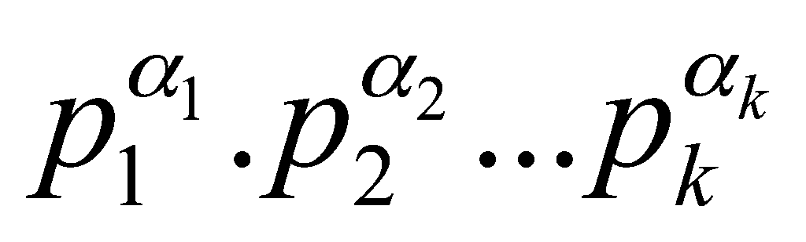
Bµi to¸n nµy cã liªn hÖ mËt thiÕt víi c¸c bµi to¸n thö tÝnh nguyªn tè hay thö tÝnh hîp sè cña mét sè nguyªn, nhng víi nh÷ng g× mµ ta biÕt ®Õn nay, nã dêng nh khã h¬n nhiÒu so víi hai bµi to¸n thö tÝnh nguyªn tè vµ tÝnh hîp sè.
Trong lý thuyÕt mËt m·, bµi to¸n nµy thêng ®îc sö dông víi c¸c d÷ liÖu n lµ sè nguyªn Blum, tøc c¸c sè nguyªn d¬ng cã d¹ng tÝch cña hai sè nguyªn tè lín nµo ®ã.
Bµi to¸n RSA (Rivest-Shamir-Adleman) :
Cho
sè nguyªn d¬ng n
lµ tÝch cña
hai sè nguyªn tè lÎ kh¸c nhau, mét sè nguyªn d¬ng e
sao cho gcd(e,
(n))
=1, vµ mét sè nguyªn c
; t×m mét sè nguyªn m
sao cho
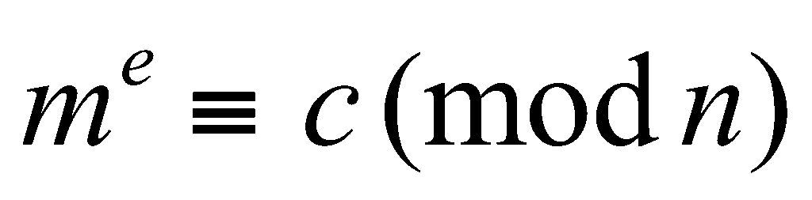
§iÒu kiÖn gcd(e, (n)) =1 b¶o ®¶m cho viÖc víi mçi sè nguyªn c 0,1,...,n -1 cã ®óng mét sè m 0,1,...,n -1 sao cho .
DÔ thÊy r»ng nÕu biÕt hai thõa sè nguyªn tè cña n, tøc lµ biÕt n =p.q th× sÏ biÕt (n) = (p -1)(q -1), vµ tõ ®ã, do gcd(e, (n)) =1 sÏ t×m ®îc d =e -1mod (n), vµ do ®ã sÏ t×m ®îc m =c d modn. Nh vËy, bµi to¸n RSA cã thÓ qui dÉn trong thêi gian ®a thøc vÒ bµi to¸n ph©n tÝch sè nguyªn. Tuy r»ng cho ®Õn nay cha cã mét chøng minh nµo cho viÖc qui dÉn ngîc l¹i nhng nhiÒu ngêi vÉn tin r»ng hai bµi to¸n ®ã lµ t¬ng ®¬ng víi nhau vÒ ®é phøc t¹p tÝnh to¸n.
Bµi to¸n thÆng d bËc hai :
Cho
mét sè nguyªn lÎ n
lµ hîp sè, vµ mét sè nguyªn a
Jn
, tËp tÊt c¶ c¸c sè
a cã ký hiÖu
Jacobi
 =1.
H·y quyÕt ®Þnh xem a
cã lµ thÆng d
bËc hai theo modn
hay kh«ng?
=1.
H·y quyÕt ®Þnh xem a
cã lµ thÆng d
bËc hai theo modn
hay kh«ng?
Trong
lý thuyÕt mËt m·, bµi to¸n nµy còng thêng ®îc
xÐt víi trêng hîp n
lµ sè nguyªn Blum, tøc n
lµ tÝch cña hai sè nguyªn tè p
vµ q
, n
=p.q.
Ta chó ý r»ng trong trêng hîp nµy, nÕu a
Jn
, th× a lµ
thÆng d bËc hai theo modn
khi vµ chØ khi
 =1,
®iÒu kiÖn nµy cã thÓ thö ®îc dÔ dµng v× nã t¬ng
®¬ng víi ®iÒu kiÖn a
(p
-1)/2
1 (modp).
Nh vËy, trong trêng hîp nµy, bµi to¸n thÆng d
bËc hai cã thÓ qui dÉn trong thêi gian ®a thøc vÒ bµi to¸n
ph©n tÝch sè nguyªn. MÆt kh¸c, nÕu kh«ng biÕt c¸ch ph©n
tÝch n thµnh
thõa sè nguyªn tè th× cho ®Õn nay, kh«ng cã c¸ch nµo gi¶i
®îc bµi to¸n thÆng d bËc hai trong thêi gian ®a
thøc. §iÒu ®ã cñng cè thªm niÒm tin r»ng bµi to¸n thÆng
d bËc hai vµ bµi to¸n ph©n tÝch sè nguyªn lµ cã ®é
khã t¬ng ®¬ng nhau.
=1,
®iÒu kiÖn nµy cã thÓ thö ®îc dÔ dµng v× nã t¬ng
®¬ng víi ®iÒu kiÖn a
(p
-1)/2
1 (modp).
Nh vËy, trong trêng hîp nµy, bµi to¸n thÆng d
bËc hai cã thÓ qui dÉn trong thêi gian ®a thøc vÒ bµi to¸n
ph©n tÝch sè nguyªn. MÆt kh¸c, nÕu kh«ng biÕt c¸ch ph©n
tÝch n thµnh
thõa sè nguyªn tè th× cho ®Õn nay, kh«ng cã c¸ch nµo gi¶i
®îc bµi to¸n thÆng d bËc hai trong thêi gian ®a
thøc. §iÒu ®ã cñng cè thªm niÒm tin r»ng bµi to¸n thÆng
d bËc hai vµ bµi to¸n ph©n tÝch sè nguyªn lµ cã ®é
khã t¬ng ®¬ng nhau.
Bµi to¸n t×m c¨n bËc hai modn :
Cho mét sè nguyªn lÎ n lµ hîp sè Blum, vµ mét sè a Qn , tøc a lµ mét thÆng d bËc hai theo modn . H·y t×m mét c¨n bËc hai cña a theo modn, tøc t×m x sao cho x 2 a (modn).
NÕu biÕt ph©n tÝch n thµnh thõa sè nguyªn tè, n =p.q , th× b»ng c¸ch gi¶i c¸c ph¬ng tr×nh x 2 a theo c¸c modp vµ modq, råi sau ®ã kÕt hîp c¸c nghiÖm cña chóng l¹i theo ®Þnh lý sè d Trung quèc ta sÏ ®îc nghiÖm theo modn , tøc lµ c¨n bËc hai cña a theo modn cÇn t×m. V× mçi ph¬ng tr×nh x 2 a theo modp vµ modq cã hai nghiÖm (t¬ng øng theo modp vµ modq ), nªn kÕt hîp l¹i ta ®îc bèn nghiÖm, tøc bèn c¨n bËc hai cña a theo modn. Ngêi ta ®· t×m ®îc mét sè thuËt to¸n t¬ng ®èi ®¬n gi¶n (trong thêi gian ®a thøc) gi¶i ph¬ng tr×nh x 2 a (modp) víi p lµ sè nguyªn tè. Nh vËy, bµi to¸n t×m c¨n bËc hai modn cã thÓ qui dÉn trong thêi gian ®a thøc vÒ bµi to¸n ph©n tÝch sè nguyªn. Ngîc l¹i, nÕu cã thuËt to¸n gi¶i bµi to¸n t×m c¨n bËc hai modn th× còng cã thÓ x©y dùng mét thuËt to¸n gi¶i bµi to¸n ph©n tÝch sè nguyªn nh sau: Chän ngÉu nhiªn mét sè x víi gcd(x,n) =1, vµ tÝnh a =x2modn. Dïng thuËt to¸n cho a ®Ó t×m mét c¨n bËc hai modn cña a. Gäi c¨n bËc hai t×m ®îc ®ã lµ y. NÕu y x (modn), th× phÐp thö coi nh thÊt b¹i, vµ ta ph¶i chän tiÕp mét sè x kh¸c. cßn nÕu y ≢ x (modn), th× gcd(x-y, n) ch¾c ch¾n lµ mét íc sè kh«ng tÇm thêng cña n, cô thÓ lµ p hay lµ q. V× n cã 4 c¨n bËc hai modn nªn x¸c suÊt cña thµnh c«ng ë mçi lÇn thö lµ 1/2, vµ do ®ã sè trung b×nh (kú väng to¸n häc) c¸c phÐp thö ®Ó thu ®îc mét thõa sè p hayq cña n lµ 2, tõ ®ã ta thu ®îc mét thuËt to¸n gi¶i bµi to¸n ph©n tÝch sè nguyªn (Blum) víi thêi gian trung b×nh ®a thøc. Tãm l¹i, theo mét nghÜa kh«ng chÆt chÏ l¾m, ta cã thÓ xem hai bµi to¸n ph©n tÝch sè nguyªn vµ t×m c¨n bËc hai modn lµ khã t¬ng ®¬ng nhau.
Bµi to¸n l«garit rêi r¹c :
Cho
sè nguyªn tè p,
mét phÇn tö nguyªn thuû
theo modp
(hay
lµ
phÇn tö nguyªn thuû cña
 ),
vµ mét phÇn tö
),
vµ mét phÇn tö
 .T×m
sè nguyªn x
(0
x
p
- 2) sao cho
x
(modp).
.T×m
sè nguyªn x
(0
x
p
- 2) sao cho
x
(modp).
Trong môc 2.4.3 ta ®· giíi thiÖu qua bµi to¸n nµy, vµ biÕt r»ng trong trêng hîp chung, cho ®Õn nay cha cã mét thuËt to¸n nµo gi¶i bµi to¸n nµy trong thêi gian ®a thøc.
Bµi to¸n nµy còng ®îc suy réng cho c¸c nhãm cyclic h÷u h¹n nh sau:
Bµi to¸n l«garit rêi r¹c suy réng :
Cho mét nhãm cyclic h÷u h¹n G cÊp n, mét phÇn tö sinh (nguyªn thuû) cña G, vµ mét phÇn tö G. T×m sè nguyªn x (0 x n - 1) sao cho x = .
C¸c
nhãm ®îc quan t©m nhiÒu nhÊt trong lý thuyÕt mËt m·
lµ: nhãm nh©n cña trêng h÷u h¹n GF
(p)
- ®¼ng cÊu víi nhãm
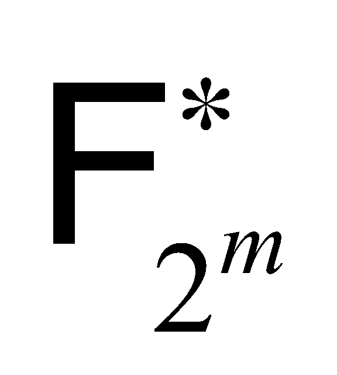 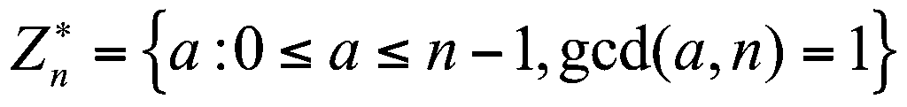 cña trêng Zp
,nhãm nh©n
cña trêng Zp
,nhãm nh©n
Bµi to¸n Diffie-Hellman :
Cho
sè nguyªn tè p,
mét phÇn tö nguyªn thuû
theo
modp
(tøc phÇn tö sinh cña
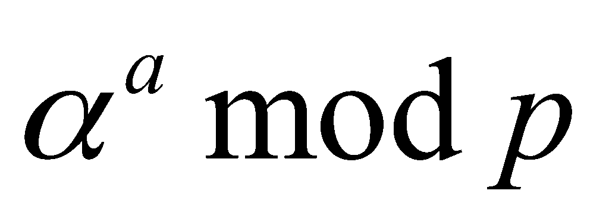 ),
vµ c¸c phÇn tö
),
vµ c¸c phÇn tö
 .
.
H·y
t×m gi¸ trÞ
 .
.
Cã
thÓ chøng minh ®îc r»ng bµi to¸n Diffie-Hellman qui dÉn
®îc vÒ bµi to¸n l«garit rêi r¹c trong thêi gian ®a
thøc. Thùc vËy, gi¶ sö cã thuËt to¸n
gi¶i bµi to¸n l«garit rêi r¹c. Khi ®ã, cho mét bé d÷ liÖu
vµo cña bµi to¸n Diffie-Hellman gåm p,
,
vµ
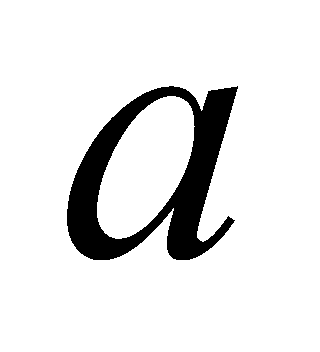 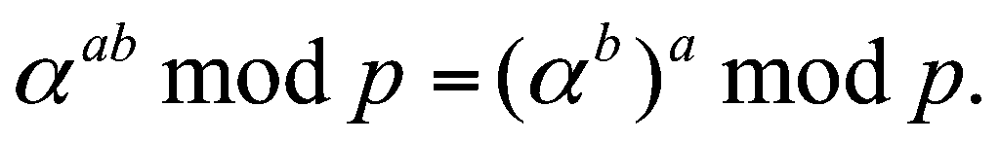 ;
tríc hÕt dïng thuËt to¸n
cho (p,
,
)
ta t×m ®îc
;
tríc hÕt dïng thuËt to¸n
cho (p,
,
)
ta t×m ®îc
T¬ng tù nh víi bµi to¸n l«garit rêi r¹c, ta còng cã thÓ ®Þnh nghÜa c¸c bµi to¸n Diffie-Hellman suy réng cho c¸c nhãm cyclic h÷u h¹n kh¸c.
Bµi to¸n tæng tËp con (hay bµi to¸n KNAPSACK) :
Cho
mét tËp c¸c sè nguyªn d¬ng
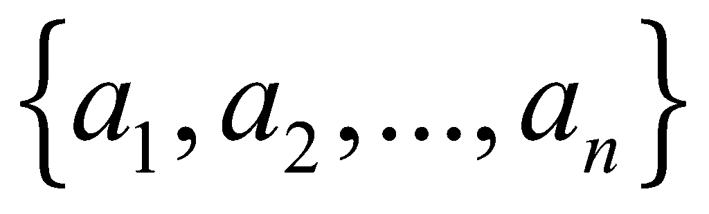 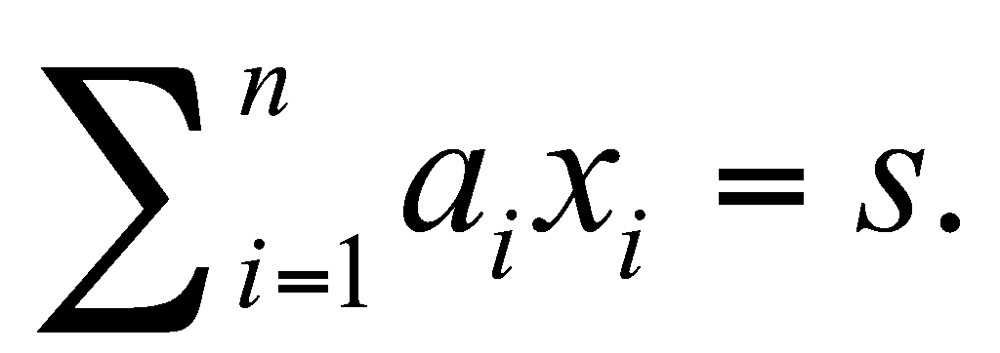
Bµi to¸n nµy lµ mét bµi to¸n - ®Çy ®ñ, tøc lµ thuéc líp nh÷ng bµi to¸n khã mµ cho ®Õn nay cha t×m ®îc thuËt to¸n gi¶i chóng trong thêi gian ®a thøc !
Bµi to¸n gi¶i m· ®èi víi m· tuyÕn tÝnh :
M· tuyÕn tÝnh lµ mét líp m· truyÒn tin cã tÝnh chÊt tù söa sai ®îc sö dông trong kü thuËt truyÒn tin sè ho¸. Kh«ng ®i vµo chi tiÕt cña líp m· nµy, ta cã thÓ ph¸t biÓu trùc tiÕp bµi to¸n gi¶i m· ®èi víi m· tuyÕn tÝnh nh sau:
Cho mét ma trËn cÊp n xm A=(aij) gåm c¸c thµnh phÇn lµ 0 hoÆc 1, mét vect¬ y =(y1,y2,...,ym) c¸c gi¸ trÞ 0 vµ 1, vµ mét sè nguyªn d¬ng K. Hái: cã hay kh«ng mét vect¬ x =(x1,x2,...,xn) gåm c¸c sè 0 hoÆc 1 vµ cã kh«ng nhiÒu h¬n K sè 1 sao cho víi mäi j (1 j m):
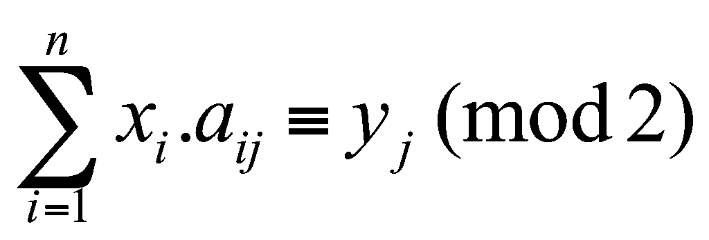
Chó ý r»ng ë ®©y, x lµ vect¬ th«ng tin, vµ y lµ vect¬ m·, phÐp gi¶i m· lµ t×m l¹i x khi nhËn ®îc y, bµi to¸n nµy tiÕc thay l¹i lµ mét bµi to¸n khã; Berlekamp, McEliece vµ Tilborg n¨m 1978 ®· chøng minh nã thuéc líp c¸c bµi to¸n - ®Çy ®ñ !
4.2. HÖ mËt m· kho¸ c«ng khai RSA.
4.2.1. M« t¶ hÖ mËt m· RSA.
S¬ ®å chung cña hÖ mËt m· kho¸ c«ng khai ®îc cho bëi
S = (P , C , K , E , D ) (1)
trong ®ã P lµ tËp ký tù b¶n râ, C lµ tËp ký tù b¶n m·, K lµ tËp c¸c kho¸ K , mçi kho¸ K gåm cã hai phÇn K =(K’,K''), K' lµ kho¸ c«ng khai dµnh cho viÖc lËp mËt m·, cßn K'' lµ kho¸ bÝ mËt dµnh cho viÖc gi¶i m·. Víi mçi ký tù b¶n râ xP , thuËt to¸n lËp m· E cho ta ký tù m· t¬ng øng y =E (K', x) C , vµ víi ký tù m· y thuËt to¸n gi¶i m· D sÏ cho ta l¹i ký tù b¶n râ x : D (K'', y) = D (K'', E (K', x)) =x.
§Ó x©y dùng mét hÖ mËt m· kho¸ c«ng khai RSA, ta chän tríc mét sè nguyªn n =p.q lµ tÝch cña hai sè nguyªn tè lín, chän mét sè e sao cho gcd(e, (n)) =1, vµ tÝnh sè d sao cho
e.d 1(mod (n)).
Mçi cÆp K =(K’,K''), víi K' =(n,e) vµ K'' = d sÏ lµ mét cÆp kho¸ cña mét hÖ mËt m· RSA cô thÓ cho mét ngêi tham gia.
Nh vËy, s¬ ®å chung cña hÖ mËt m· RSA ®îc ®Þnh nghÜa bëi danh s¸ch (1), trong ®ã:
P = C = Zn , trong ®ã n lµ mét sè nguyªn Blum, tøc lµ tÝch cña hai sè nguyªn tè;
K = {K =(K’,K''): K' =(n,e) vµ K'' = d, gcd(e, (n)) =1,
e.d 1(mod (n))};
E vµ D ®îc x¸c ®Þnh bëi:
E (K', x) = xe modn, víi mäi x P ,
D (K'', y) = yd modn, víi mäi y C .
§Ó chøng tá ®Þnh nghÜa trªn lµ hîp thøc, ta ph¶i chøng minh r»ng víi mäi cÆp kho¸ K =(K' ,K'' ), vµ mäi x P , ta ®Òu cã
D (K'', E (K', x)) = x .
Thùc vËy, do e.d 1(mod (n)) ta cã thÓ viÕt e.d = t . (n) +1. NÕu x nguyªn tè víi n , th× dïng ®Þnh lý Euler (xem 2.1.3) ta cã
D (K'', E (K', x)) =
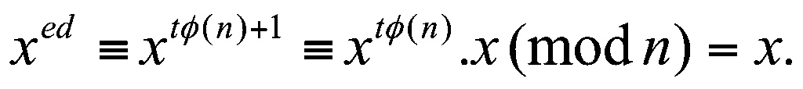
NÕu x kh«ng nguyªn tè víi n , th× do n =p.q , hoÆc x chia hÕt cho p vµ nguyªn tè víi q, hoÆc x chia hÕt cho q vµ nguyªn tè víi p, vµ
(n) =(p -1).(q -1),trong c¶ hai trêng hîp ta ®Òu cã
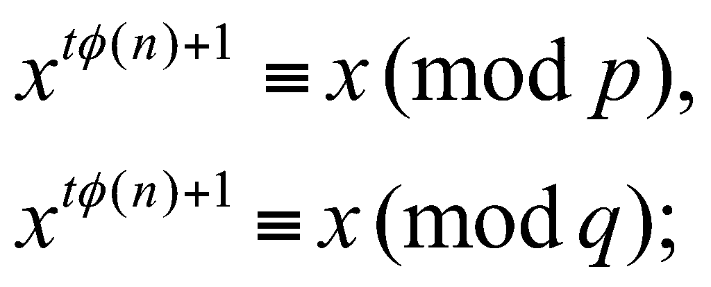
tõ ®ã suy ra
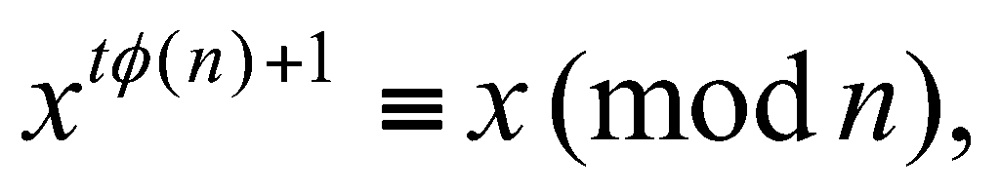
tøc D (K'', E (K', x)) =x.ThÝ dô: Gi¶ sö chän n =p.q = 2357.2551 = 6012707, ta sÏ cã (n) =
(p -1).(q -1)=2356.2550 = 6007800. Chän e = 3674911, vµ tÝnh ®îc d = 422191 sao cho e.d 1(mod (n)). Mét ngêi dïng A cã thÓ chän kho¸ c«ng khai lµ K' =(n =6012707, e = 3674911) vµ gi÷ kho¸ bÝ mËt K'' =d =422191. Mét ®èi t¸c B muèn göi cho A mét th«ng b¸o
x =5234673, sÏ dïng kho¸ c«ng khai ®Ó t¹o b¶n mËt m· y =xe = 52346733674911mod6012707 = 3650502. A nhËn ®îc y, gi¶i m· sÏ ®îc b¶n râ x =3650502422191mod 6012707 =5234673.
4.2.2. Thùc hiÖn hÖ mËt m· RSA.
§Ó thùc hiÖn hÖ mËt m· RSA cho mét m¹ng truyÒn tin b¶o mËt, ngoµi viÖc x©y dùng c¸c ch¬ng tr×nh tÝnh to¸n hµm E (víi tham biÕn ®Çu vµo lµ n ,e vµ x) vµ hµm D (víi tham biÕn ®Çu vµo lµ n ,d vµ y), ta cßn ph¶i chän cho mçi ngêi tham gia mét bé (n,e,d) ®Ó t¹o c¸c kho¸ c«ng khai K' vµ kho¸ bÝ mËt K'' . HÖ m· cña mçi ngêi tham gia chØ cã kh¶ n¨ng b¶o mËt khi n =p.q lµ sè nguyªn rÊt lín (vµ do ®ã p,q còng ph¶i lµ nh÷ng sè nguyªn tè rÊt lín); rÊt lín cã nghÜa lµ p,q ph¶i cã biÓu diÔn thËp ph©n cì h¬n 100 ch÷ sè, do ®ã n cã cì h¬n 200 ch÷ sè thËp ph©n, hay n 10200!
TÝnh to¸n c¸c sè e,d , hay thùc hiÖn c¸c hµm E , D , ®Òu chñ yÕu lµ thùc hiÖn c¸c phÐp tÝnh sè häc trªn c¸c sè nguyªn rÊt lín; vÒ vÊn ®Ò nµy trong mÊy chôc n¨m qua, khoa lËp tr×nh m¸y tÝnh ®· ®Ò xuÊt nhiÒu ch¬ng tr×nh m¸y tÝnh lµm viÖc rÊt cã hiÖu qu¶, ta cã thÓ tham kh¶o ®Ó sö dông khi thùc thi c¸c hÖ mËt m· RSA còng nh nhiÒu hÖ mËt m· kh¸c.
4.2.3. TÝnh b¶o mËt cña mËt m· RSA.
Bµi to¸n th¸m m· (khi chØ biÕt b¶n m·) ®èi víi mËt m· RSA lµ: biÕt kho¸ c«ng khai K' =(n,e), biÕt b¶n m· y =x e modn, t×m x. Bµi to¸n nµy chÝnh lµ bµi to¸n RSA ®îc tr×nh bµy trong môc 4.1.2. Trong môc ®ã ta ®· chøng tá r»ng nÕu biÕt hai thõa sè p,q cña n th× dÔ t×m ®îc x tõ y, vµ nãi chung cã b»ng chøng ®Ó coi r»ng bµi to¸n RSA (hay bµi to¸n th¸m m· RSA) lµ cã ®é khã t¬ng ®¬ng víi bµi to¸n ph©n tÝch sè nguyªn (Blum) thµnh thõa sè nguyªn tè. Do ®ã, gi÷ tuyÖt mËt kho¸ bÝ mËt d , hay gi÷ tuyÖt mËt c¸c thõa sè p,q , lµ cã ý nghÜa rÊt quyÕt ®Þnh ®Õn viÖc b¶o vÖ tÝnh an toµn cña hÖ mËt m· RSA.
Mét m¹ng truyÒn tin b¶o mËt sö dông s¬ ®å c¸c hÖ mËt m· RSA ®îc xem lµ an toµn, nÕu tu©n thñ c¸c ®iÒu kiÖn c¬ b¶n: mçi ngêi tham gia ph¶i ®éc lËp lùa chän c¸c tham sè n, e,d cña riªng m×nh, chän n còng cã nghÜa lµ chän c¸c thõa sè p,q cña n (n =p.q), vµ do cã p,q nªn tÝnh ®îc (n) = (p -1).(q -1), vµ tõ ®ã t×m ®îc e,d t¬ng ®èi dÔ dµng; nhng còng chÝnh v× vËy mµ sau khi ®· chän th× mçi ngêi tham gia ph¶i gi÷ tuyÖt ®èi bÝ mËt c¸c gi¸ trÞ p,q,d , chØ c«ng bè kho¸ c«ng khai (n,e) mµ th«i.
Tuy nhiªn, ®ã lµ ®iÒu kiÖn chung, cßn trong thùc tÕ vÉn cã thÓ cßn nhiÒu s¬ hë mµ ngêi th¸m m· cã thÓ lîi dông ®Ó tÊn c«ng vµo tÝnh b¶o mËt cña c¸c hÖ m· RSA khã mµ lêng tríc hÕt ®îc; sau ®©y lµ mét sè trêng hîp ®¬n gi¶n ®· biÕt mµ ta cÇn chó ý:
1.Dïng m«®uyn n chung. Gi¶ sö cã hai ngêi tham gia A vµ B cïng sö dông mét m«®uyn chung n trong kho¸ c«ng khai cña m×nh, ch¼ng h¹n A chän kho¸ c«ng khai (n,e) vµ gi÷ kho¸ bÝ mËt d, B chän kho¸ c«ng khai (n,a) vµ gi÷ kho¸ bÝ mËt b. Mét ngêi tham gia thø ba C göi mét v¨n b¶n cÇn b¶o mËt x ®Õn c¶ A vµ B th× dïng c¸c kho¸ c«ng khai nãi trªn ®Ó göi ®Õn A b¶n mËt m· y =x emodn vµ göi ®Õn B b¶n mËt m· z =
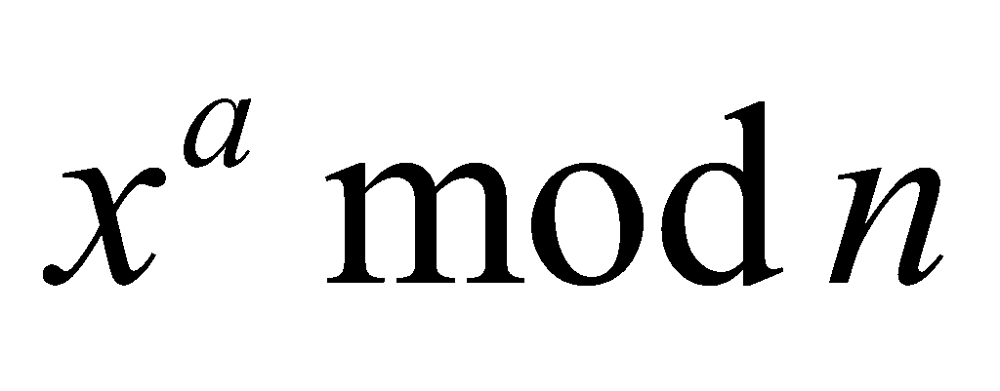
. Ta sÏ chøng tá r»ng mét ngêi th¸m m· O cã thÓ dùa vµo nh÷ng th«ng tin n,e,a,y,z trªn ®êng c«ng khai mµ ph¸t hiÖn ra b¶n râ x nh sau:TÝnh c = e -1moda,
Sau ®ã tÝnh h = (ce -1)/a ,
Vµ ta ®îc x = yc (z h)-1 modn.
Thùc vËy, theo ®Þnh nghÜa trªn, ce -1 chia hÕt cho a, vµ tiÕp theo ta cã: yc (z h)-1modn = x ec .
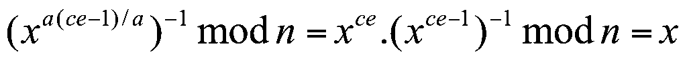
. Nh vËy, trong trêng hîp nµy viÖc truyÒn tin b¶o mËt kh«ng cßn an toµn n÷a. V× vËy, ta cÇn nhí khi dïng c¸c hÖ RSA ®Ó tæ chøc m¹ng truyÒn tin b¶o mËt, cÇn tr¸nh dïng m«®uyn n chung cho c¸c ngêi tham gia kh¸c nhau!2. Dïng sè mò lËp m· e bÐ. §Ó cho viÖc tÝnh to¸n hµm lËp m· ®îc hiÖu qu¶, ta dÔ cã xu híng chän sè mò e cña hµm lËp m· lµ mét sè nguyªn bÐ, ch¼ng h¹n e =3. Tuy nhiªn, nÕu trong mét m¹ng truyÒn tin b¶o mËt dïng c¸c hÖ mËt m· RSA, nÕu cã nhiÒu ngêi cïng chän sè mò lËp m· e bÐ gièng nhau th× sÏ cã nguy c¬ bÞ tÊn c«ng bëi viÖc th¸m m· nh sau : Gi¶ sö cã ba ngêi tham gia chän ba kho¸ c«ng khai lµ (n1, e), (n2, e), (n3, e) víi cïng sè mò e =3. Mét ngêi tham gia A muèn göi mét th«ng b¸o x cho c¶ ba ngêi ®ã, vµ ®Ó b¶o mËt, göi b¶n m· ci = x3modni cho ngêi thø i. Ba m«®uyn ni lµ kh¸c nhau, vµ cã phÇn ch¾c lµ tõng cÆp nguyªn tè víi nhau. Mét ngêi th¸m m· cã thÓ dïng ®Þnh lý sè d Trung quèc ®Ó t×m mét sè m (0 m n1n2n3) tho¶ m·n
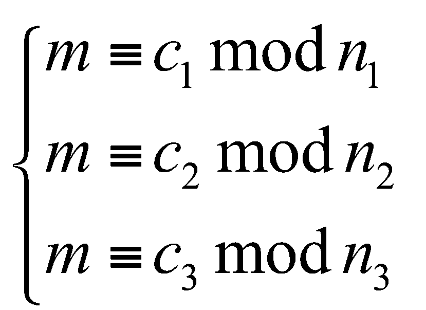
V× x ni , nªn x 3 n1n2n3 , do ®ã ¾t cã m =x 3. VËy lµ ta ®· ®a ®îc bµi to¸n t×m c¨n bËc ba theo nghÜa ®ång d modni vÒ bµi to¸n t×m c¨n bËc ba theo nghÜa sè häc th«ng thêng: t×m c¨n bËc ba cña m ta ®îc x, tøc ®îc b¶n râ!
Víi nh÷ng lý do kh¸c, ngêi ta ®· cã nh÷ng b»ng chøng ®Ó chøng tá r»ng hÖ RSA còng kh«ng b¶o ®¶m an toµn nÕu ta dïng c¸c kho¸ cã sè mò gi¶i m· d lµ sè nguyªn bÐ, dï r»ng khi ®ã thuËt to¸n gi¶i m· cã lµm viÖc hiÖu qu¶ h¬n. V× thÕ, khi sö dông c¸c hÖ mËt m· RSA, ®Ó b¶o ®¶m an toµn ta nªn chän c¸c sè mò e vµ d lµ nh÷ng sè nguyªn lín, cã kÝch cì lín gÇn nh b¶n th©n sè n.
3.
Lîi dông tÝnh nh©n cña hµm lËp m·.
Ta chó ý r»ng hµm lËp m· f
(x)
= x
emodn
cã tÝnh nh©n (multiplicative property), nghÜa lµ f
(x.y)
= f
(x).f
(y).
Dùa vµo tÝnh chÊt ®ã, ta thÊy r»ng nÕu c
lµ mËt m· cña b¶n râ x,
th×
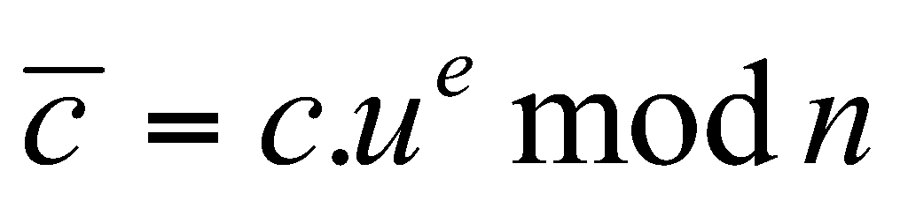 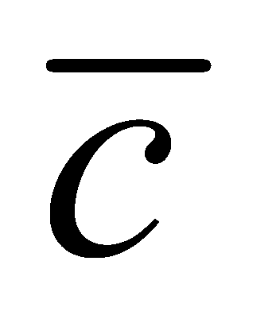 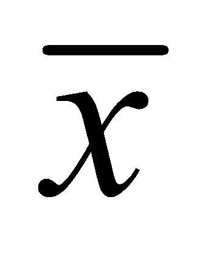 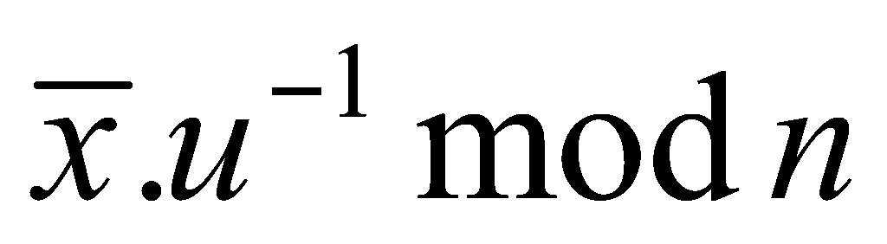
4. TÊn c«ng b»ng c¸ch lÆp phÐp m·. Ta còng chó ý r»ng hµm lËp m· f (x) = x emodn lµ mét phÐp ho¸n vÞ trªn tËp Zn ={0,1,...,n -1}, do ®ã víi mäi c Zn nÕu ta thùc hiÖn lÆp phÐp lËp m· ®Ó ®îc
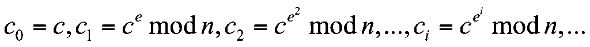
¾t
sÏ t×m ®îc sè k
1 sao cho
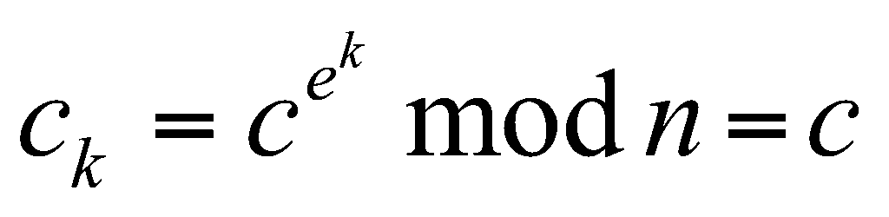
5. VÒ kh¶ n¨ng che giÊu cña b¶n mËt m·. MËt m·, së dÜ nã gi÷ ®îc bÝ mËt, lµ do kh¶ n¨ng che giÊu th«ng tin cña nã, tøc lµ biÕt b¶n m· y khã lßng t×m ®îc th«ng tin nµo ®Ó ph¸t hiÖn ra b¶n râ x. Mét c¸ch th« thiÓn, ta nãi b¶n râ x lµ kh«ng che giÊu ®îc qua phÐp lËp mËt m· RSA eK (x) =x e modn, nÕu eK (x) =x. Nãi c¸ch kh¸c, x lµ kh«ng che giÊu ®îc nÕu b¶n m· cña x còng chÝnh lµ x. TiÕc r»ng víi bÊt kú hÖ mËt m· RSA nµo còng cã nh÷ng b¶n râ kh«ng che giÊu ®îc, ®ã lµ nh÷ng b¶n râ x = -1, 0, 1 modn (v× sè mò e lu«n lu«n lµ sè lÎ). Ngêi ta chøng minh ®îc r»ng nÕu n =p.q, th× sè c¸c b¶n râ x Zn kh«ng che giÊu ®îc lµ b»ng
(1+gcd(e -1, p -1)).(1+gcd(e -1, q -1)).
V× e -1, p -1, q -1 lµ c¸c sè ch½n, nªn sè ®ã Ýt nhÊt lµ 9, nªn mçi hÖ RSA cã Ýt nhÊt 9 b¶n râ kh«ng che giÊu ®îc. Tuy nhiªn, thêng n, vµ do ®ã c¶ p vµ q, ®Òu rÊt lín, nªn tû lÖ c¸c b¶n râ kh«ng che giÊu ®îc nãi chung lµ bÐ kh«ng ®¸ng kÓ, vµ do ®ã kh¶ n¨ng gÆp c¸c b¶n râ kh«ng che giÊu ®îc kh«ng t¹o nªn mét nguy c¬ ®¸ng kÓ nµo ®èi víi viÖc dïng c¸c hÖ mËt m· RSA.
4.3. HÖ mËt m· kho¸ c«ng khai Rabin.
4.3.1. M« t¶ hÖ mËt m· Rabin.
S¬ ®å hÖ mËt m· kho¸ c«ng khai Rabin ®îc cho bëi S = (P , C , K , E , D ),
trong ®ã: P =C = Zn , trong ®ã n lµ mét sè nguyªn Blum, n =p.q, víi p vµ q lµ hai sè nguyªn tè cã tÝnh chÊt p 3(mod4), q 3(mod4),
K = {K = (K', K'') : K' =(n,B), K'' =(p,q), 0B n –1},
c¸c thuËt to¸n E vµ D ®îc x¸c ®Þnh bëi
E (K' ,x) = x (x +B) modn ,
D
(K'',y)
= 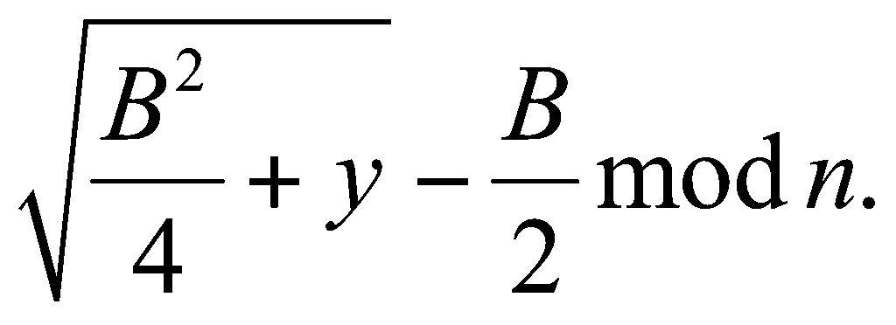
(ký hiÖu c¨n bËc hai sÏ ®îc gi¶i thÝch sau).
Trong mét m¹ng truyÒn tin b¶o mËt víi s¬ ®å mËt m· Rabin, mçi ngêi tham gia chän cho m×nh c¸c yÕu tè n,B,p,q ®Ó lËp nªn kho¸ c«ng khai vµ kho¸ bÝ mËt cña m×nh.
Ta
chó ý r»ng víi mçi bé kho¸ K,
c¸c
thuËt to¸n
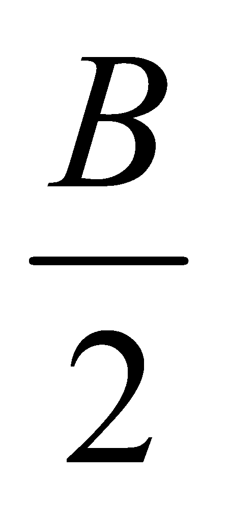 =
E
(K'
,.)
vµ
=
E
(K'
,.)
vµ
 =
D
(K'',.)
kh«ng lËp thµnh mét cÆp song ¸nh, cô thÓ lµ
=
D
(K'',.)
kh«ng lËp thµnh mét cÆp song ¸nh, cô thÓ lµ
 kh«ng ph¶i lµ mét ®¬n ¸nh, v× nÕu w
lµ mét c¨n bËc hai cña 1 theo modn
th×
kh«ng ph¶i lµ mét ®¬n ¸nh, v× nÕu w
lµ mét c¨n bËc hai cña 1 theo modn
th×
 (w(x
+
(w(x
+ (x),
mµ ta cã ®Õn 4 c¨n bËc hai cña 1 theo modn
,tøc lµ ta cã 4 gi¸ trÞ kh¸c nhau cña ®èi sè x
cho cïng mét gi¸ trÞ
(x),
mµ ta cã ®Õn 4 c¨n bËc hai cña 1 theo modn
,tøc lµ ta cã 4 gi¸ trÞ kh¸c nhau cña ®èi sè x
cho cïng mét gi¸ trÞ
 (x).
(x).
B©y
giê nãi ®Õn thuËt to¸n gi¶i m·
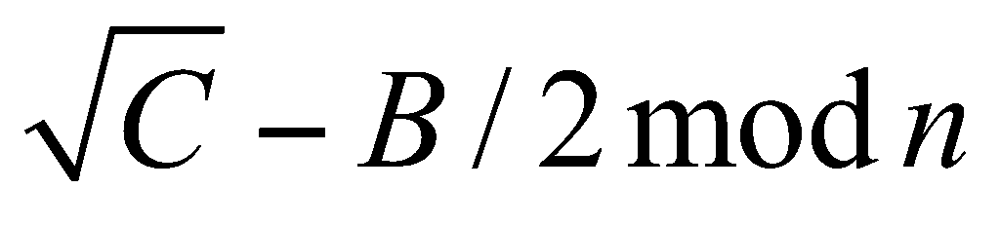 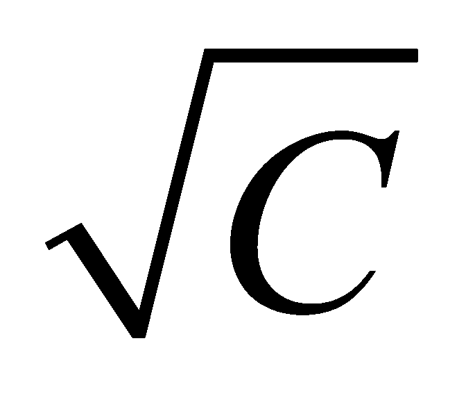 =
D
(K'',.).
§Æt C
= B
2/4
+y,
ta cã
=
D
(K'',.).
§Æt C
= B
2/4
+y,
ta cã
 (y)
=
(y)
= (y),
ta cÇn tÝnh
(y),
ta cÇn tÝnh
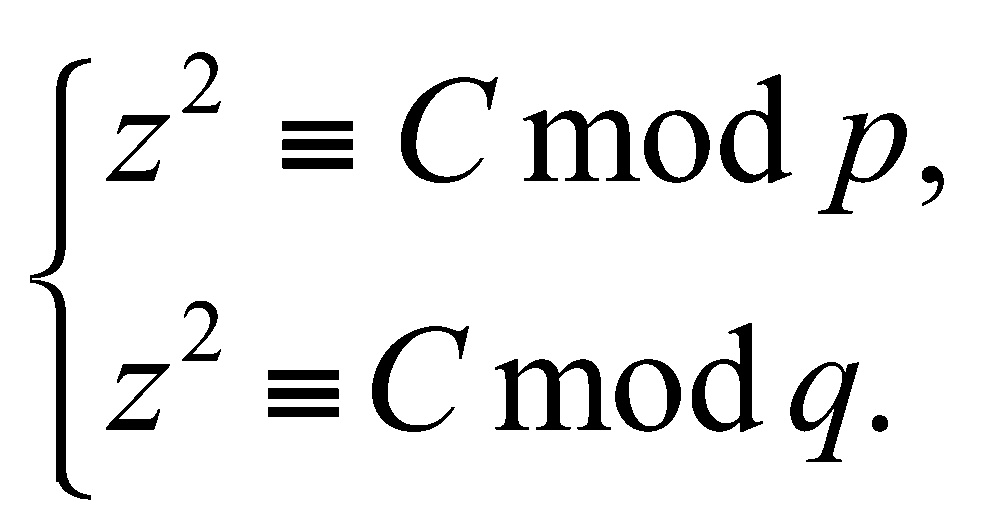
V×
p
vµ q
lµ c¸c sè nguyªn tè nªn ta cã
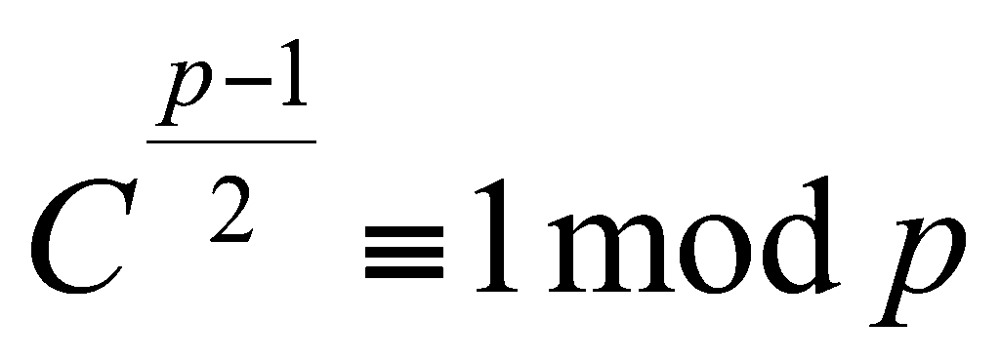 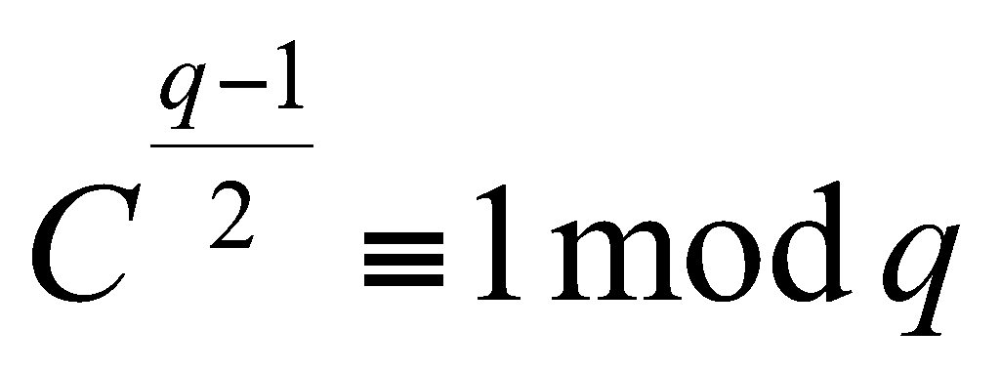 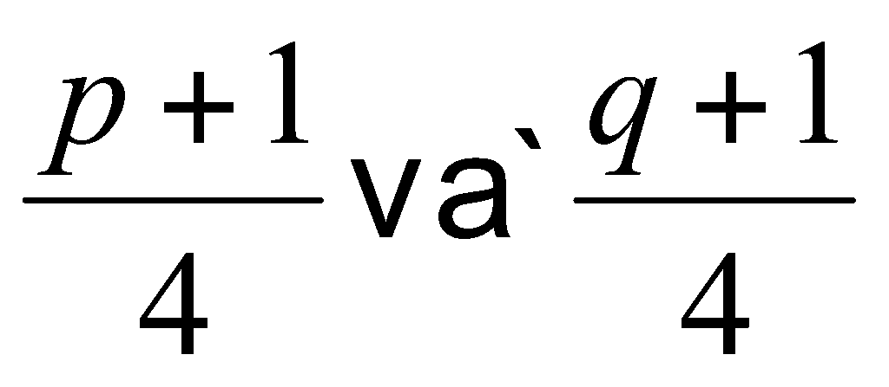
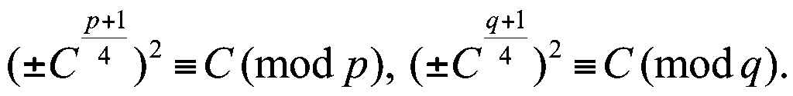
Do ®ã,ph¬ng tr×nh z 2 C modn , hay hÖ ph¬ng tr×nh (2), cã 4 nghiÖm theo modn , t¬ng øng víi 4 hÖ ph¬ng tr×nh sau ®©y :
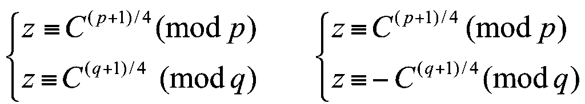
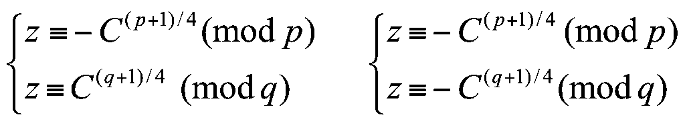
C¶
4 nghiÖm cña 4 hÖ ph¬ng tr×nh ®ã theo modn
®Òu ®îc viÕt chung díi mét ký hiÖu lµ
modn,
vµ v× vËy thuËt to¸n gi¶i m·
 (y)
thùc tÕ sÏ cho ta 4 gi¸ trÞ kh¸c nhau theo modn
mµ b¶n râ lµ mét trong 4 gi¸ trÞ ®ã. ViÖc chän gi¸ trÞ
nµo trong 4 gi¸ trÞ t×m ®îc lµm b¶n râ lµ tuú thuéc
vµo nh÷ng ®Æc trng kh¸c cña b¶n râ mµ ngêi gi¶i
m· nhËn biÕt (thÝ dô b¶n râ díi d¹ng sè ph¶i cã biÓu
diÔn nhÞ ph©n lµ m· cña mét v¨n b¶n tiÕng Anh th«ng
thêng).
(y)
thùc tÕ sÏ cho ta 4 gi¸ trÞ kh¸c nhau theo modn
mµ b¶n râ lµ mét trong 4 gi¸ trÞ ®ã. ViÖc chän gi¸ trÞ
nµo trong 4 gi¸ trÞ t×m ®îc lµm b¶n râ lµ tuú thuéc
vµo nh÷ng ®Æc trng kh¸c cña b¶n râ mµ ngêi gi¶i
m· nhËn biÕt (thÝ dô b¶n râ díi d¹ng sè ph¶i cã biÓu
diÔn nhÞ ph©n lµ m· cña mét v¨n b¶n tiÕng Anh th«ng
thêng).
ThÝ dô : Gi¶ sö n =77 = 7.11, B =9 (ë ®©y p =7, q =11). Ta cã
 (x)
= x
2
+ 9x
mod77,
(x)
= x
2
+ 9x
mod77,
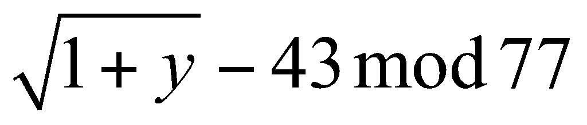 (y)
=
(y)
=
v× 2-1=39mod77, 9.2-1 =9.39 =43mod77, B 2=4mod77, B 2/4 =1mod 77.
Víi
x
=44 ta cã
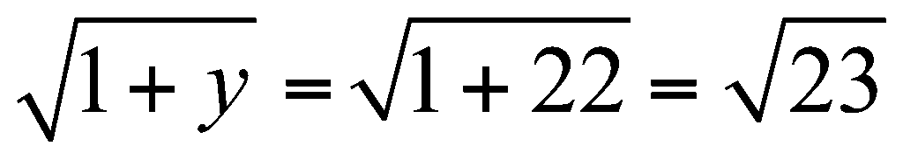 (x)
= 442+9.44
=2332 =22mod77, b¶n m· t¬ng øng víi x
lµ y
= 22. B©y giê gi¶i m· víi b¶n m· y
=22, b»ng thñ tôc nãi trªn ta cã thÓ t×m ®îc 4 gi¸
trÞ cña
(x)
= 442+9.44
=2332 =22mod77, b¶n m· t¬ng øng víi x
lµ y
= 22. B©y giê gi¶i m· víi b¶n m· y
=22, b»ng thñ tôc nãi trªn ta cã thÓ t×m ®îc 4 gi¸
trÞ cña
 (y)
lµ
(y)
lµ
 (y)
= 44, 24, 66, 2.
(y)
= 44, 24, 66, 2.
B¶n râ n»m trong 4 gi¸ trÞ ®ã, trong trêng hîp nµy lµ 44.
4.3.2. TÝnh an toµn cña hÖ mËt m· Rabin.
Trong ®Þnh nghÜa cña hÖ mËt m· Rabin, kho¸ c«ng khai lµ (n,B), kho¸ bÝ mËt lµ (p,q) tøc lµ cÆp thõa sè nguyªn tè cña n . Nh vËy, tÝnh an toµn cña hÖ mËt m· n»m ë viÖc gi÷ bÝ mËt c¸c thõa sè p vµ q. §Þnh nghÜa cña phÐp gi¶i m· còng cho ta thÊy r»ng yÕu tè cã ý nghÜa quyÕt ®Þnh trong phÐp gi¶i m· lµ viÖc tÝnh c¨n bËc hai cña mét sè theo modn. Trong môc 4.1.2 bµi to¸n t×m c¨n bËc hai theo modn (víi n lµ hîp sè Blum) ®· ®îc chøng tá lµ cã ®é khã t¬ng ®¬ng víi bµi to¸n ph© n tÝch n thµnh thõa sè nguyªn tè. V× vËy, bµi to¸n gi¶i m· ®èi víi hÖ mËt m· Rabin, còng lµ bµi to¸n gi÷ bÝ mËt kho¸ bÝ mËt (p,q), vµ bµi to¸n ph©n tÝch sè nguyªn thµnh thõa sè nguyªn tè lµ cã ®é khã t¬ng ®¬ng nhau. Vµ ®ã còng lµ yÕu tè b¶o ®¶m tÝnh an toµn cña hÖ mËt m· Rabin !
4.4. HÖ mËt m· kho¸ c«ng khai ElGamal.
4.4.1. M« t¶ hÖ mËt m· ElGamal.
HÖ mËt m· ElGamal ®îc T. ElGamal ®Ò xuÊt n¨m 1985, dùa vµo ®é phøc t¹p cña bµi to¸n tÝnh l«garit rêi r¹c, vµ sau ®ã ®· nhanh chãng ®îc sö dông réng r·i kh«ng nh÷ng trong vÊn ®Ò b¶o mËt truyÒn tin mµ cßn trong c¸c vÊn ®Ò x¸c nhËn vµ ch÷ ký ®iÖn tö.
S¬ ®å hÖ mËt m· kho¸ c«ng khai ElGamal ®îc cho bëi
S = (P , C , K , E , D ),
trong
®ã: P
= ,
C
=
,
C
=
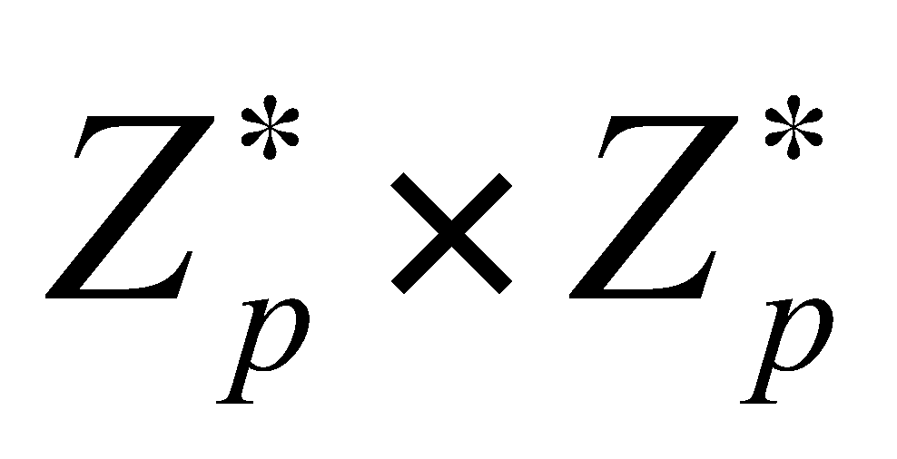
, víi p lµ mét sè nguyªn tè;K ={K = (K', K'') : K' =(p, ,) , K'' = a , a modp},
ë
®©y
lµ mét phÇn tö nguyªn thuû theo modp,
tøc cña
 .
.
C¸c
thuËt to¸n lËp m·
 =
E
(K'
,.)
vµ gi¶i m·
=
E
(K'
,.)
vµ gi¶i m·
 =
D
(K'',.)
®îc x¸c ®Þnh nh sau: Víi mçi xP
=
=
D
(K'',.)
®îc x¸c ®Þnh nh sau: Víi mçi xP
= ,
®Ó lËp mËt m· cho x
tríc hÕt ta chän
thªm
mét sè ngÉu nhiªn k
Zp
-1
råi tÝnh:
,
®Ó lËp mËt m· cho x
tríc hÕt ta chän
thªm
mét sè ngÉu nhiªn k
Zp
-1
råi tÝnh:
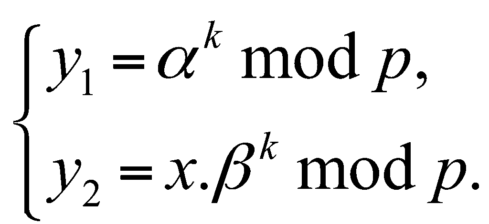 (x,k
) = (y1,
y2),
víi
(x,k
) = (y1,
y2),
víi
Víi
mäi sè ngÉu nhiªn k
bÊt kú, ta ®Òu xem
 (x,k
) lµ mËt m· cña x.
Vµ thuËt to¸n gi¶i m· ®îc x¸c ®Þnh bëi
(x,k
) lµ mËt m· cña x.
Vµ thuËt to¸n gi¶i m· ®îc x¸c ®Þnh bëi
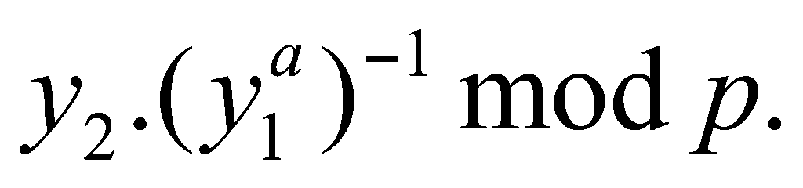 (y1,
y 2)
=
(y1,
y 2)
=
C¸c
phÐp lËp mËt m· vµ gi¶i m· ®îc x¸c ®Þnh nh vËy
lµ hîp thøc, v× ta cã víi mäi xP
= vµ
mäi k
Zp
-1 :
vµ
mäi k
Zp
-1 :
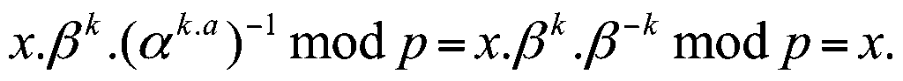 (
( (x,k
)) =
(x,k
)) =
Ta chó ý r»ng trong mét m¹ng truyÒn th«ng b¶o mËt víi viÖc dïng s¬ ®å mËt m· ElGamal, mçi ngêi tham gia tù chän cho m×nh c¸c tham sè p,, a, råi tÝnh , sau ®ã lËp vµ c«ng bè kho¸ c«ng khai K' =(p, ,), nhng ph¶i gi÷ tuyÖt mËt kho¸ bÝ mËt K'' = a. Bµi to¸n biÕt kho¸ c«ng khai t×m ra kho¸ bÝ mËt chÝnh lµ bµi to¸n tÝnh l«garit rêi r¹c ®îc kÓ ®Õn trong môc 4.1.2, mét bµi to¸n khã cho ®Õn nay cha cã mét thuËt to¸n nµo lµm viÖc trong thêi gian ®a thøc gi¶i ®îc nã.
ThÝ dô : Chän p = 2579, =2, a =765, ta tÝnh ®îc = 2765 = 949 mod2579. Ta cã kho¸ c«ng khai (2579, 2, 949) vµ kho¸ bÝ mËt 765. Gi¶ sö ®Ó lËp mËt m· cho x =1299, ta chän ngÉu nhiªn k =853, sÏ cã
 (1299,
853) = (2853,
1299. 949853)mod2579
(1299,
853) = (2853,
1299. 949853)mod2579
= (453, 2396).
Vµ gi¶i m· ta ®îc l¹i
 (453,
2396) = 2396. (453765)-1mod2579
= 1299.
(453,
2396) = 2396. (453765)-1mod2579
= 1299.
4.4.2. TÝnh an toµn cña hÖ mËt m· ElGamal.
Nh ®· tr×nh bµy ë trªn, nÕu ta xem tÝnh an toµn cña hÖ mËt m· ElGamal lµ ë viÖc gi÷ tuyÖt mËt kho¸ bÝ mËt K'', th× ta cã thÓ yªn t©m v× bµi to¸n ph¸t hiÖn kho¸ bÝ mËt cã ®é khã t¬ng ®¬ng víi bµi to¸n tÝnh l«garit rêi r¹c, mµ bµi to¸n nµy th× nh ë c¸c môc 4.1.2 vµ 2.4.3 ®· chøng tá, cho ®Õn nay cha cã mét thuËt to¸n nµo lµm viÖc trong thêi gian ®a thøc gi¶i ®îc nã. Cã mét ®iÒu c¶nh b¸o lµ nªn chó ý chän m«®uyn p lµ sè nguyªn tè sao cho p -1 cã Ýt nhÊt mét íc sè nguyªn tè lín (xem 2.4.3). §iÒu ®ã lµ thùc hiÖn ®îc nÕu sè nguuyªn tè p ®îc chän lµ sè nguyªn tè Sophie Germain (tøc cã d¹ng 2q +1, víi q còng lµ sè nguyªn tè lín).
Mét trêng hîp kh¸c lµm mÊt tÝnh an toµn cña hÖ mËt m· ElGamal lµ viÖc dïng cïng mét sè k cho nhiÒu lÇn lËp mËt m·. Thùc vËy, gi¶ sö dïng cïng mét sè ngÉu nhiªn k cho hai lÇn lËp m·, mét lÇn cho x1 , mét lÇn cho x2 , vµ ®îc c¸c b¶n m· t¬ng øng (y1,y2) vµ (z1,z2). V× cïng dïng mét sè k nªn y1=z1. Vµ do ®ã theo c«ng thøc lËp m· ta cã z2/y2 = x2/x1, tøc lµ x2 = x1.z2/y2. Nh vËy, mét ngêi th¸m m·, mét lÇn “biÕt c¶ b¶n râ” dÔ dµng ph¸t hiÖn ®îc b¶n râ trong c¸c lÇn sau.
4.4.3. C¸c hÖ mËt m· t¬ng tù ElGamal.
HÖ
mËt m· ElGamal ®îc x©y dùng dùa trªn c¸c yÕu tè :
mét nhãm h÷u h¹n cyclic ( ),
mét
phÇn tö nguyªn thuû (
),
mét
phÇn tö nguyªn thuû (
 )
sao
cho bµi to¸n tÝnh l«garit rêi r¹c (tÝnh a
= log
, tøc
cho
t×m
a
sao cho
=
a
modp)
lµ rÊt khã thùc hiÖn. V× vËy, nÕu cã ®ñ c¸c yÕu tè ®ã
th× ta cã thÓ x©y dùng c¸c hÖ mËt m· t¬ng tù ElGamal.
Nh vËy, s¬ ®å cña mét hÖ mËt m· t¬ng tù ElGamal
®îc cho bëi
)
sao
cho bµi to¸n tÝnh l«garit rêi r¹c (tÝnh a
= log
, tøc
cho
t×m
a
sao cho
=
a
modp)
lµ rÊt khã thùc hiÖn. V× vËy, nÕu cã ®ñ c¸c yÕu tè ®ã
th× ta cã thÓ x©y dùng c¸c hÖ mËt m· t¬ng tù ElGamal.
Nh vËy, s¬ ®å cña mét hÖ mËt m· t¬ng tù ElGamal
®îc cho bëi
S = (P , C , K , E , D ),
trong ®ã: P =G, C =
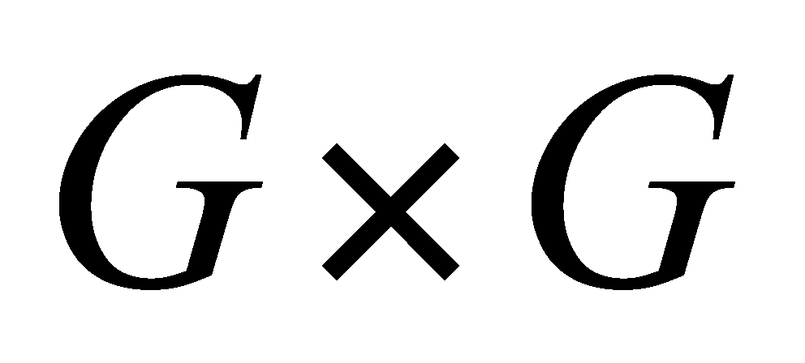
, víi G lµ mét nhãm cyclic h÷u h¹n;K ={K = (K', K'') : K' =(G, ,) , K'' = a , = a },
ë ®©y lµ mét phÇn tö nguyªn thuû cña nhãm G.
C¸c
thuËt to¸n lËp m·
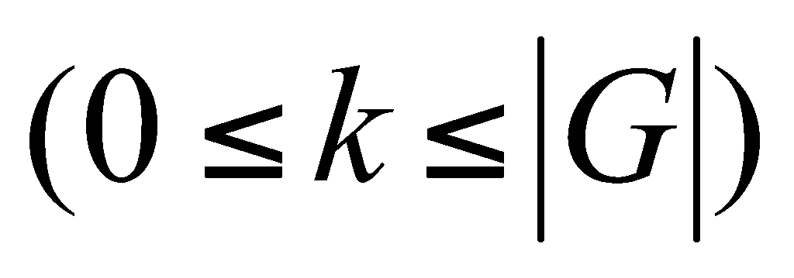 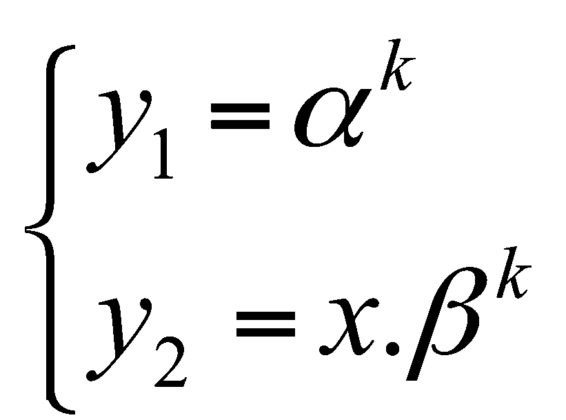 =
E
(K'
,.)
vµ gi¶i m·
=
E
(K'
,.)
vµ gi¶i m·
 =
D
(K'',.)
®îc x¸c ®Þnh nh sau: Víi mçi xP
=G, ®Ó
lËp mËt m· cho x
tríc hÕt ta chän
thªm
mét sè ngÉu nhiªn k
=
D
(K'',.)
®îc x¸c ®Þnh nh sau: Víi mçi xP
=G, ®Ó
lËp mËt m· cho x
tríc hÕt ta chän
thªm
mét sè ngÉu nhiªn k
 (x,k
) = (y1,
y2),
víi
(x,k
) = (y1,
y2),
víi
Víi
mäi sè ngÉu nhiªn k
bÊt kú, ta ®Òu xem
 (x,k
) lµ mËt m· cña x.
Vµ thuËt to¸n gi¶i m· ®îc x¸c ®Þnh bëi
(x,k
) lµ mËt m· cña x.
Vµ thuËt to¸n gi¶i m· ®îc x¸c ®Þnh bëi
 (y1,
y 2)
=
(y1,
y 2)
=
PhÐp nh©n trong c¸c biÓu thøc nãi trªn ®Òu lµ phÐp nh©n cña G.
Cã hai líp nhãm thêng ®îc sö dông ®Ó x©y dùng c¸c hÖ mËt m· t¬ng tù ElGamal lµ nhãm nh©n cña trêng Galois GF(pn) vµ nhãm céng cña mét ®êng cong elliptic x¸c ®Þnh trªn mét trêng h÷u h¹n.
1. Nhãm nh©n cña trêng Galois GF(pn) : Trêng Galois GF(pn) lµ trêng cña c¸c ®a thøc víi hÖ sè trong Zp lÊy theo m«®uyn lµ mét ®a thøc bËc n bÊt kh¶ qui; víi phÐp céng vµ phÐp nh©n lµ phÐp céng vµ phÐp nh©n ®a thøc theo m«®uyn ®ã. Trêng cã pn phÇn tö, cã thÓ xem mçi phÇn tö lµ mét ®a thøc bËc n -1 víi hÖ sè thuéc Zp = {0,1,2,...,p -1}, thËm chÝ lµ mét vect¬ n chiÒu mµ c¸c thµnh phÇn lµ c¸c hÖ sè cña ®a thøc ®ã. TËp tÊt c¶ c¸c ®a thøc kh¸c 0 lËp thµnh nhãm nh©n cña trêng GF (pn),vµ ngêi ta chøng minh ®îc r»ng nhãm nh©n ®ã lµ cyclic.
Nh vËy, nhãm G = GF (pn){0} lµ nhãm cyclic cÊp pn-1. ta cã thÓ chän mét phÇn tö nguyªn thuû cña nhãm ®ã, vµ thiÕt lËp bµi to¸n l«garit rêi r¹c t¬ng øng, tõ ®ã x©y dùng ®îc hÖ mËt m· t¬ng tù ElGamal.
2.
Nhãm
céng cña ®êng cong elliptic
: Gi¶ sö p
lµ mét sè nguyªn tè
3. §êng
cong elliptic y2=x3+a.x+b
trªn
Zp
, trong
®ã a,b
Zp
lµ c¸c h»ng sè tho¶ m·n
 4a3+27b2
≢
0 (modp),
®îc ®Þnh nghÜa lµ tËp hîp tÊt c¶ c¸c ®iÓm (x,y)
Zp
Zp
tho¶ m·n ph¬ng tr×nh
4a3+27b2
≢
0 (modp),
®îc ®Þnh nghÜa lµ tËp hîp tÊt c¶ c¸c ®iÓm (x,y)
Zp
Zp
tho¶ m·n ph¬ng tr×nh
y2 x3+a.x+b (modp),
cïng víi mét phÇn tö ®Æc biÖt mµ ta ký hiÖu lµ . TËp hîp ®ã ®îc ký hiÖu lµ E. Trªn tËp E ta x¸c ®Þnh mét phÐp céng nh sau : Gi¶ sö P =(x1, y1) vµ Q = (x2, y2) lµ hai ®iÓm cña E. NÕu x1=x2 vµ y1= -y2 th× ta ®Þnh nghÜa P +Q = ; nÕu kh«ng th× P +Q = (x3, y3), trong ®ã
x3 = 2-x1-x2 , y3 = (x1-x3) - y1 ,
víi

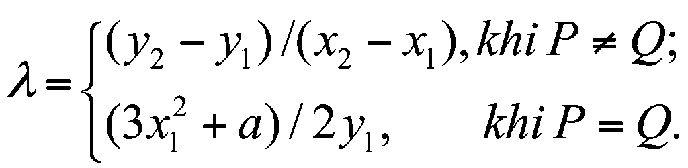
Ngoµi ra, ta ®Þnh nghÜa thªm : P + = +P = P.
TËp E víi phÐp to¸n céng ®ã lËp thµnh mét nhãm. NÕu E =q lµ sè nguyªn tè th× nhãm céng ®ã lµ nhãm cyclic, vµ mäi phÇn tö kh¸c kh«ng ( ) ®Òu lµ phÇn tö nguyªn thuû. Ta nhí r»ng trong trêng hîp nµy, phÇn tö nghÞch ®¶o lµ phÇn tö ®èi, phÐp n©ng lªn luü thõa n lµ phÐp nh©n víi sè n , phÐp l«garit t¬ng øng víi mét kiÓu phÐp chia. Ta cã thÓ xuÊt ph¸t tõ nhãm E nµy ®Ó x©y dùng hÖ mËt m· t¬ng tù ElGamal.
4.5. C¸c hÖ mËt m· dùa trªn c¸c bµi to¸n -®Çy ®ñ.
4.5.1. Nguyªn t¾c chung.
Nh ®· giíi thiÖu trong ch¬ng II, c¸c bµi to¸n -®Çy ®ñ lµ c¸c bµi to¸n mµ cho ®Õn nay cha t×m ®îc mét thuËt to¸n víi ®é phøc t¹p tÝnh to¸n ®a thøc nµo ®Ó gi¶i chóng. Vµ tÝnh « khã» cña c¸c bµi to¸n ®ã l¹i ®îc b¶o ®¶m b»ng sù kiÖn lµ chØ cÇn cã mét thuËt to¸n víi ®é phøc t¹p ®a thøc gi¶i mét bµi to¸n -®Çy ®ñ nµo ®ã th× lËp tøc mäi bµi to¸n -®Çy ®ñ ®Òu gi¶i ®îc trong thêi gian ®a thøc.
§èi víi mét sè bµi to¸n -®Çy ®ñ, tuy kh«ng cã thuËt to¸n víi ®é phøc t¹p ®a thøc ®Ó gi¶i ®èi víi mäi d÷ liÖu cña bµi to¸n, nhng cã thÓ cã mét líp c¸c d÷ liÖu mµ ®èi víi chóng cã thuËt to¸n ®Ó gi¶i víi thêi gian chÊp nhËn ®îc. Víi nh÷ng bµi to¸n nh vËy ta cã thÓ sö dông ®Ó x©y dùng c¸c hÖ mËt m· kho¸ c«ng khai víi nguyªn t¾c chung nh sau : HÖ mËt m· sÏ cã phÐp gi¶i m· t¬ng ®¬ng víi viÖc t×m lêi gi¶i cho bµi to¸n -®Çy ®ñ ®ã; tuy nhiªn cã mét thñ tôc ®Ó biÕn mét d÷ liÖu nãi chung cña bµi to¸n -®Çy ®ñ ®ã thµnh mét d÷ liÖu thuéc líp ®Æc biÖt mµ ®èi víi nã cã thÓ gi¶i ®îc bëi mét thuËt to¸n víi ®é phøc t¹p thêi gian chÊp nhËn ®îc. Nh vËy, ta ®· biÕn ®îc phÐp lËp m· thµnh mét hµm « cöa sËp mét phÝa », vµ ®ã lµ c¬ së ®Ó x©y dùng hÖ mËt m· kho¸ c«ng khai t¬ng øng.
Ta sÏ xÐt sau ®©y hai trêng hîp x©y dùng ®îc c¸c hÖ mËt m· kho¸ c«ng khai theo c¸ch nh vËy : mét lµ hÖ mËt m· Merkle-Hellman dùa trªn bµi to¸n s¾p ba l« (hay bµi to¸n tæng tËp con), vµ hai lµ hÖ mËt m· Mc-Eliece dùa trªn bµi to¸n gi¶i m· tuyÕn tÝnh tù söa sai.
4.5.2. HÖ mËt m· Merkle-Hellman.
Bµi to¸n s¾p ba l« (tøc bµi to¸n KNAPSACK, còng ®îc gäi lµ bµi to¸n tæng tËp con) ®îc ®Æt ra nh sau: Cho mét tËp c¸c sè nguyªn d¬ng vµ mét sè nguyªn d¬ng s. H·y x¸c ®Þnh xem cã hay kh«ng mét tËp con c¸c aj mµ tæng cña chóng b»ng s. Mét c¸ch t¬ng ®¬ng, h·y x¸c ®Þnh xem cã hay kh«ng c¸c xi 0,1 (1 i n) sao cho
Bµi to¸n nµy lµ -®Çy ®ñ, tuy nhiªn nÕu ta h¹n chÕ bµi to¸n trªn c¸c d÷ liÖu I =( ,T ), trong ®ã lµ d·y siªu t¨ng, tøc lµ d·y tho¶ m·n ®iÒu kiÖn
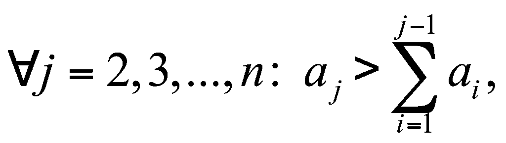
th× viÖc t×m tr¶ lêi lµ kh¸ dÔ dµng, ch¼ng h¹n cã thÓ b»ng thuËt to¸n ®¬n gi¶n díi ®©y:
for i =n downto 1 do
if T ai then T = T – ai , xi = 1, else xi = 0
if
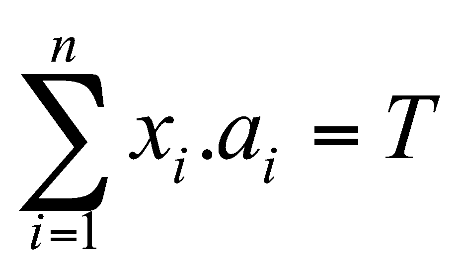 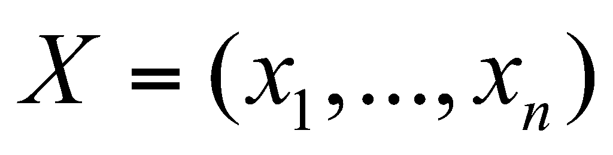
else there is no solution.
B©y giê, ®Ó chuÈn bÞ x©y dùng mét s¬ ®å mËt m· Merkle-Hellman, ta chän tríc mét sè nguyªn d¬ng n vµ mét sè nguyªn tè p ®ñ lín. Víi mçi ngêi tham gia sÏ ®îc chän mét bé kho¸ K = (K', K''),
trong
®ã kho¸ bÝ mËt K''
= (A,
p, a)
gåm
mét d·y siªu t¨ng A=
tho¶
m·n
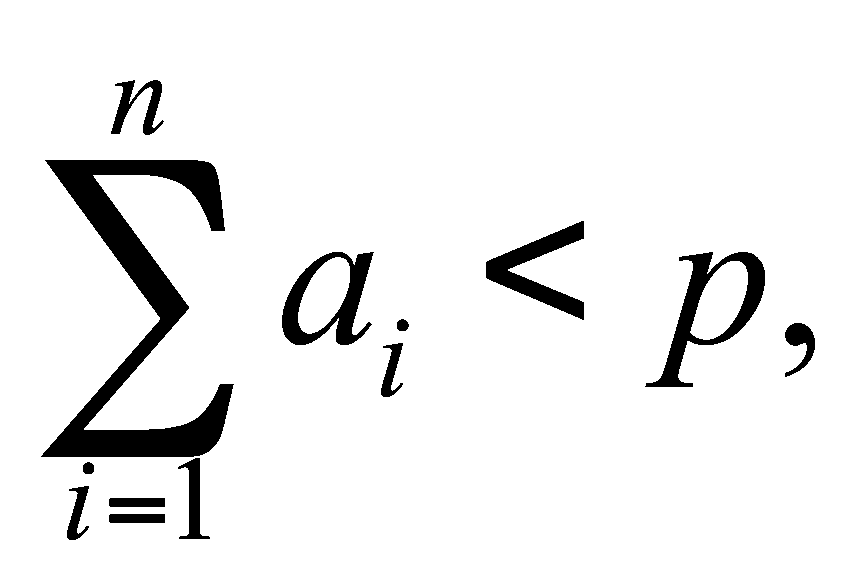
S¬ ®å hÖ mËt m· Merkle-Hellman ®îc ®Þnh nghÜa bëi
S = (P , C , K , E , D ),
trong ®ã P = {0,1}n , C ={0,1,...,n(p -1)}, K lµ tËp c¸c bé kho¸ K = (K', K'') nh ®îc x©y dùng ë trªn. C¸c thuËt to¸n lËp mËt m· vµ gi¶i m· ®îc x¸c ®Þnh bëi:
Víi
mäi
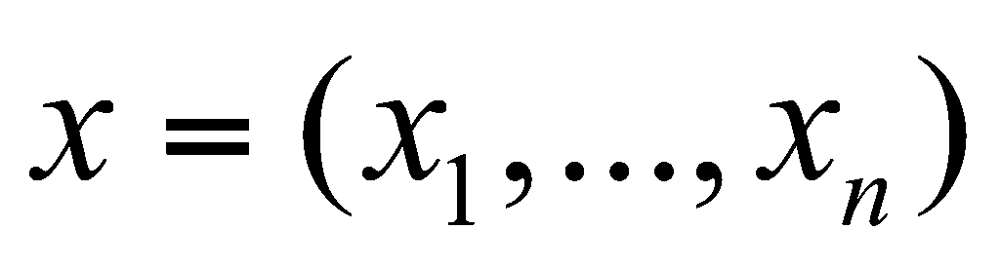
E
(K',
x) =
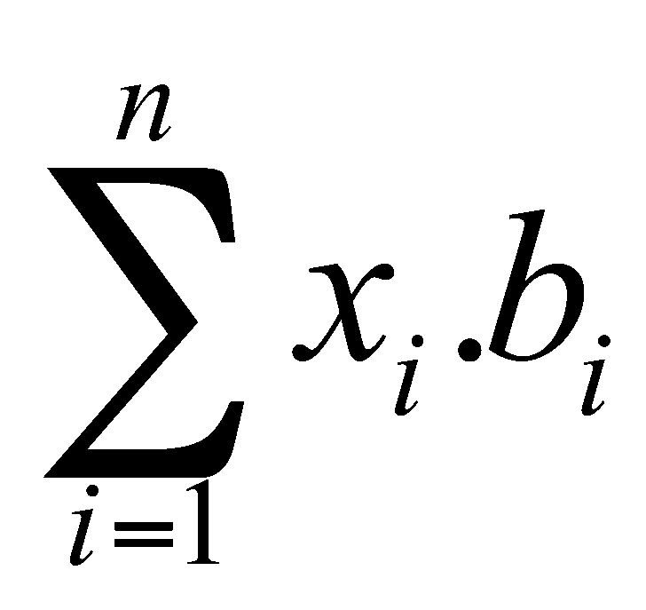
vµ
víi mäi yC
,
ta tÝnh z
=a-1.y
modp, råi
sau ®ã gi¶i bµi to¸n s¾p bal« ®èi víi d÷ liÖu I
=(
,z
) ta sÏ ®îc lêi gi¶i
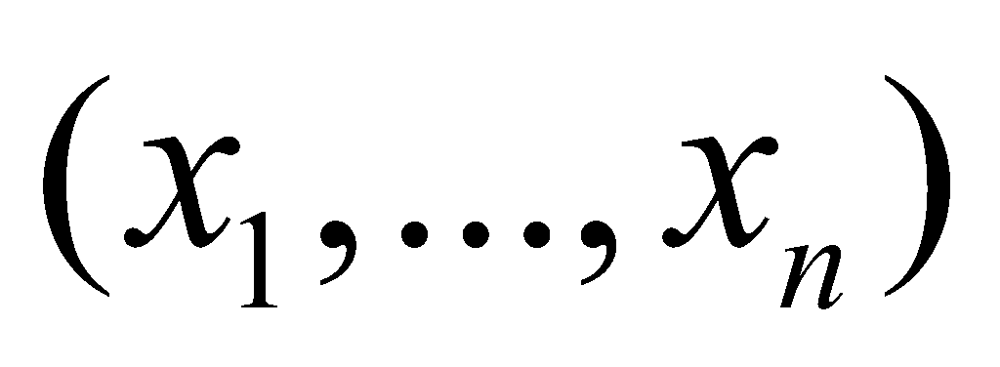
ThÝ dô: Chän n =6, kho¸ bÝ mËt cã p = 737, A={12, 17, 33, 74, 157, 316}, a =635. TÝnh ®îc kho¸ c«ng khai lµ {250, 477, 319, 559, 200, 196}. Víi b¶n râ x = 101101 ta cã b¶n m· t¬ng øng lµ y = 1324. §Ó gi¶i m·, tríc hÕt tÝnh z = a-1.y modp = 635-1.1324 mod737 = 435, sau ®ã gi¶i bµi to¸n s¾p bal« víi d·y siªu t¨ng A vµ z ta ®îc
435 = 12 + 33 + 74 + 316,
tøc ®îc lêi gi¶i x = (1,0,1,1,0,1).
HÖ mËt m· Merkle-Hellman ®îc ®Ò xuÊt kh¸ sím, tõ n¨m 1978, ®Õn n¨m 1985 Shamir t×m ®îc mét ph¬ng ph¸p th¸m m· trong thêi gian ®a thøc dùa vµo mét thuËt to¸n cña Lenstra gi¶i bµi to¸n qui ho¹ch ®éng. Tuy nhiªn, sau ®ã, vµo n¨m 1988, Chor vµ Rivest cã ®a ra mét c¸ch kh¸c x©y dùng hÖ mËt m· còng dùa vµo bµi to¸n s¾p bal«, cho ®Õn nay vÉn gi÷ ®îc an toµn.
4.5.3. HÖ mËt m· McEliece.
HÖ mËt m· McEliece ®îc x©y dùng dùa vµo tÝnh -®Çy ®ñ cña bµi to¸n gi¶i m· tuyÕn tÝnh tù söa sai (trong lý thuyÕt truyÒn tin). Bµi to¸n ®îc ®Æt ra nh sau: gi¶ sö nguån tin lµ tËp c¸c tõ k bit nhÞ ph©n, tøc tËp hîp {0,1}k, ®îc truyÒn ®i trªn mét kªnh cã nhiÔu, tøc lµ nÕu truyÒn trùc tiÕp c¸c d·y tõ k bit th× th«ng tin mµ ta nhËn ®îc cã thÓ bÞ sai lÖch vµ ta kh«ng nhËn ®îc ®óng th«ng tin ®îc truyÒn ®i. §Ó kh¾c phôc nh÷ng sai lÖch ®ã ngêi ta t×m c¸ch m· ho¸ nguån tin gèc b»ng c¸ch thªm cho mçi tõ k bit mang th«ng tin mét sè bit dïng ®Ó tù hiÖu chØnh, tøc lµ thùc hiÖn mét phÐp m· ho¸ biÕn mçi tõ k bit ban ®Çu thµnh mét tõ n bit, víi n k, ®îc gäi lµ tõ m·. PhÐp m· ho¸ tuyÕn tÝnh lµ phÐp m· ho¸ ®îc thùc hiÖn b»ng c¸ch nh©n tõ k bit ban ®Çu x víi mét ma trËn G cÊp kn ®Ó ®îc tõ m· n bit y, y =x.G (c¸c phÐp to¸n céng vµ nh©n ®îc thùc hiÖn theo mod2). Ta ®Þnh nghÜa kho¶ng c¸ch Hamming gi÷a hai tõ m· n bit lµ sè c¸c vÞ trÝ mµ t¹i ®ã hai tõ m· cã gi¸ trÞ kh¸c nhau; kho¶ng c¸ch d cña hÖ m· lµ kho¶ng c¸ch Hamming bÐ nhÊt gi÷a hai tõ m· bÊt kú. Nh vËy, mét hÖ m· tuyÕn tÝnh ®îc x¸c ®Þnh bëi mét ma trËn G (gäi lµ ma trËn sinh), vµ ®îc ®Æc trng bëi ba sè n,k,d . NÕu d = 2t +1, th× hÖ m· cã kh¶ n¨ng tù söa sai ®Õn t sai ngÉu nhiªn nhiÔm ph¶i do nhiÔu cña kªnh truyÒn. Tuy nhiªn, viÖc tù söa sai (tøc lµ khi nhËn ®îc tõ m· cã thÓ cã ®Õn t sai ta t×m l¹i ®îc ®óng tõ k bit th«ng tin ban ®Çu) cña c¸c hÖ m· tuyÕn tÝnh nh vËy nãi chung kh¸ phøc t¹p, vµ bµi to¸n gi¶i m· tuyÕn tÝnh tù söa sai ®· ®îc chøng minh lµ mét bµi to¸n -khã, tøc cho ®Õn nay cha biÕt cã thuËt to¸n nµo lµm viÖc trong thêi gian ®a thøc gi¶i ®îc nã. MÆc dÇu vËy, ngêi ta ®· t×m ®îc mét sè líp riªng c¸c hÖ m· tuyÕn tÝnh mµ ®èi víi chóng cã thÓ x©y dùng ®îc nh÷ng thuËt to¸n gi¶i m· tù söa sai lµm viÖc cã hiÖu qu¶, c¸c hÖ m· Goppa lµ mét líp nh vËy. HÖ m· Goppa lµ mét lo¹i hÖ m· tuyÕn tÝnh cã c¸c ®Æc trng n = 2m, d =2t +1, k =n -mt , cã ma trËn sinh G cÊp kn ®îc x©y dùng dùa trªn mét sè tÝnh chÊt ®¹i sè cña trêng GF(2n)-mµ ë ®©y ta kh«ng ®i vµo c¸c chi tiÕt.
§Ó cã mét hÖ mËt m· McEliece, tríc hÕt ta chän mét hÖ m· Goppa víi ma trËn sinh G vµ c¸c ®Æc trng trªn, sau ®ã dïng mét ma trËn S kh¶ nghÞch cÊp kk trªn Z2 vµ mét ma trËn ho¸n vÞ P cÊp n n (còng cã c¸c phÇn tö trong Z2) ®Ó biÕn hÖ m· Goppa víi ma trËn sinh G thµnh mét hÖ m· tuyÕn tÝnh “phæ biÕn” víi ma trËn sinh G* =SGP; vËy lµ ®· biÕn hÖ m· Goppa cã thuËt to¸n gi¶i m· hiÖu qu¶ thµnh mét hÖ m· tuyÕn tÝnh nãi chung mµ ta chØ biÕt viÖc gi¶i m· tù söa sai ®èi víi nã lµ -khã. HÖ mËt m· mµ ta x©y dùng sÏ cã thuËt to¸n gi¶i m· lµ “dÔ” ®èi víi ngêi trong cuéc nh gi¶i m· Goppa, vµ lµ “khã” ®èi víi ngêi ngoµi nh gi¶i m· tuyÕn tÝnh nãi chung!
Nh vËy, mét hÖ mËt m· kho¸ c«ng khai McEliece ®îc x¸c ®Þnh bëi
S = (P , C , K , E , D ),
trong ®ã P ={0,1}k, C = {0,1}n , K lµ tËp hîp c¸c bé kho¸ K = (K', K''), víi kho¸ bÝ mËt K'' = (G,S,P ) gåm mét ma trËn sinh G cña mét hÖ m· Goppa, mét ma trËn kh¶ nghÞch S cÊp kk trªn Z2 vµ mét ma trËn ho¸n vÞ P cÊp n n ; kho¸ c«ng khai K' = G* lµ ma trËn “®· ®îc biÕn ®æi” nãi trªn.
ThuËt to¸n lËp mËt m· E (K',.): P C ®îc x¸c ®Þnh bëi
E (K', x) = x. G* + e ,
trong ®ã e {0,1}n lµ mét vect¬ ngÉu nhiªn cã träng sè t , tøc cã t thµnh phÇn lµ 1. ThuËt to¸n gi¶i m· D (K'',.) ®îc thùc hiÖn theo ba bíc nh sau víi mäi y C = {0,1}n :
TÝnh y1 = y.P –1,
Gi¶i m· Goppa ®èi víi y1, gi¶ sö ®îc x1.
TÝnh D (K'', y) = x1. S -1.
DÔ thö l¹i r»ng c¸c thuËt to¸n lËp mËt m· vµ gi¶i m· x¸c ®Þnh nh trªn lµ hîp thøc, v× víi mäi x P ={0,1}k, ta ®Òu cã
D (K'', E (K', x)) = x ,
§¼ng thøc ®ã ®óng víi mäi vect¬ e bÊt kú cã träng sè t . HÖ mËt m· nµy còng t¬ng tù nh hÖ mËt m· ElGamal ë chç khi lËp mËt m· ta cã thÓ chän thªm cho d÷ liÖu vµo mét yÕu tè ngÉu nhiªn; vÒ sau ta sÏ gäi nh÷ng hÖ mËt m· nh vËy lµ hÖ mËt m· x¸c suÊt.
YÕu tè chñ yÕu b¶o ®¶m tÝnh an toµn cña c¸c hÖ mËt m· McEliece lµ ë chç tõ kho¸ c«ng khai G* khã ph¸t hiÖn ra kho¸ bÝ mËt (G,S,P ) vµ ë tÝnh -khã cña bµi to¸n gi¶i m· tuyÕn tÝnh tù söa sai nãi chung. Còng cÇn nhí r»ng ®é an toµn cßn phô thuéc vµo viÖc chän c¸c tham sè k,n,t ®ñ lín; theo gîi ý cña c¸c nghiªn cøu thùc nghiÖm th× ®ñ lín cã nghÜa lµ n 1024, k 644, t 38. Víi nh÷ng ®ßi hái ®ã th× kÝch cì cña c¸c ma trËn G, S, P vµ G* sÏ qu¸ lín, kh¸ bÊt tiÖn cho viÖc thùc thi trong thùc tÕ, v× vËy mµ c¸c hÖ mËt m· McEliece cha ®îc sö dông phæ biÕn l¾m.
4.6. C¸c hÖ mËt m· x¸c suÊt kho¸ c«ng khai.
4.6.1. §Æt vÊn ®Ò vµ ®Þnh nghÜa.
MËt
m· x¸c suÊt lµ mét ý tëng ®îc ®Ò xuÊt bëi
Goldwasser vµ Micali tõ n¨m 1984, xuÊt ph¸t tõ yªu cÇu gi¶i
quyÕt mét vÊn ®Ò sau ®©y: Gi¶ thiÕt ta cã mét hÖ mËt m·
kho¸ c«ng khai, vµ ta muèn lËp mËt m· cho b¶n râ chØ gåm
mét bit. §iÒu ®ã thêng gÆp khi ta muèn bÝ mËt truyÒn
®i mét th«ng tin chØ cã néi dung lµ cã
hoÆc
kh«ng,
tøc lµ mét th«ng tin ®Æc biÖt quan träng nhng chØ gåm
mét bit.
NÕu ta dïng mét hÖ mËt m· kho¸ c«ng khai th«ng thêng,
th× b¶n mËt m· ®îc truyÒn ®i sÏ lµ
 (0)
hoÆc
(0)
hoÆc
 (1),
mét ngêi th¸m m· cã thÓ kh«ng biÕt c¸ch gi¶i m·,
nhng l¹i hoµn toµn cã thÓ tÝnh tríc c¸c gi¸ trÞ
(1),
mét ngêi th¸m m· cã thÓ kh«ng biÕt c¸ch gi¶i m·,
nhng l¹i hoµn toµn cã thÓ tÝnh tríc c¸c gi¸ trÞ
 (0)
vµ
(0)
vµ
 (1),
vµ
khi lÊy ®îc b¶n m· truyÒn ®i trªn kªnh truyÒn tin c«ng
céng, chØ cÇn so s¸nh b¶n m· nhËn ®îc ®ã víi hai b¶n
(1),
vµ
khi lÊy ®îc b¶n m· truyÒn ®i trªn kªnh truyÒn tin c«ng
céng, chØ cÇn so s¸nh b¶n m· nhËn ®îc ®ã víi hai b¶n
 (0)
vµ
(0)
vµ
 (1)
®· ®îc tÝnh s½n lµ ®ñ biÕt ®îc th«ng tin mËt
®îc truyÒn ®i lµ 0 hay lµ 1. C¸c hÖ mËt m· kho¸ c«ng
khai së dÜ cã ®îc tÝnh b¶o mËt lµ v× tõ th«ng tin vÒ
b¶n m· khã lßng khai th¸c ®îc th«ng tin g× vÒ b¶n râ,
nhng râ rµng ®iÒu ®ã kh«ng cßn ®îc b¶o ®¶m nÕu
sè c¸c b¶n râ lµ rÊt Ýt, ch¼ng h¹n nh khi c¸c b¶n râ
cã ®é dµi cùc ng¾n, hay nh trêng hîp trªn, sè c¸c
b¶n râ chØ lµ hai, cô thÓ lµ 0 vµ 1.
(1)
®· ®îc tÝnh s½n lµ ®ñ biÕt ®îc th«ng tin mËt
®îc truyÒn ®i lµ 0 hay lµ 1. C¸c hÖ mËt m· kho¸ c«ng
khai së dÜ cã ®îc tÝnh b¶o mËt lµ v× tõ th«ng tin vÒ
b¶n m· khã lßng khai th¸c ®îc th«ng tin g× vÒ b¶n râ,
nhng râ rµng ®iÒu ®ã kh«ng cßn ®îc b¶o ®¶m nÕu
sè c¸c b¶n râ lµ rÊt Ýt, ch¼ng h¹n nh khi c¸c b¶n râ
cã ®é dµi cùc ng¾n, hay nh trêng hîp trªn, sè c¸c
b¶n râ chØ lµ hai, cô thÓ lµ 0 vµ 1.
Môc ®Ých cña viÖc x©y dùng mËt m· x¸c suÊt lµ ®Ó b¶o ®¶m kh«ng mét th«ng tin nµo vÒ b¶n râ cã thÓ khai th¸c ®îc (trong thêi gian ®a thøc) tõ b¶n m·; ®iÒu nµy, ®èi víi c¸c hÖ mËt m· kho¸ c«ng khai, cã thÓ ®îc thùc hiÖn b»ng c¸ch t¹o cho mét b¶n râ nhiÒu b¶n m· kh¸c nhau thu ®îc mét c¸ch ngÉu nhiªn víi viÖc sö dông c¸c sè ngÉu nhiªn trong tiÕn tr×nh lËp m·. Sau ®©y lµ ®Þnh nghÜa vÒ mét hÖ mËt m· x¸c suÊt kho¸ c«ng khai:
§Þnh nghÜa. Mét hÖ mËt m· x¸c suÊt kho¸ c«ng khai ®îc x¸c ®Þnh bëi mét bé
S = (P , C , K , E , D, R ),
trong
®ã P
,
C
, K
®îc
hiÓu nh ®èi víi c¸c hÖ mËt m· kho¸ c«ng khai th«ng
thêng, R
lµ mét tËp
c¸c phÇn tö ngÉu nhiªn, vµ víi mçi K
= (K', K'')K
, thuËt
to¸n lËp mËt m·
 =
E
(K'
,.):
P
R
C
vµ
gi¶i m·
=
E
(K'
,.):
P
R
C
vµ
gi¶i m·
 =
D
(K'',.):
C
P
tho¶ m·n
®¼ng thøc:
=
D
(K'',.):
C
P
tho¶ m·n
®¼ng thøc:
víi
mäi x
P
,
r R
,
 (
( (x,r
)) = x.
(x,r
)) = x.
Ngoµi ra, ta mong muèn mét ®iÒu kiÖn an toµn nh trong ®Þnh nghÜa sau ®©y ®îc tho¶ m·n: ta ký hiÖu pK,x lµ ph©n bè x¸c suÊt trªn tËp C , trong ®ã pK,x(y) lµ x¸c suÊt cña viÖc y lµ b¶n m· khi biÕt K lµ kho¸ vµ x lµ b¶n râ (x¸c suÊt ®îc tÝnh cho tÊt c¶ r R ). Ta nãi hai ph©n bè x¸c suÊt p1 vµ p2 trªn C lµ -ph©n biÖt ®îc nÕu cã mét thuËt to¸n -ph©n biÖt hai ph©n bè x¸c suÊt ®ã, tøc lµ mét thuËt to¸n A : C {0,1} tho¶ m·n tÝnh chÊt
EA(p1) - EA(p2) ,
trong ®ã
EA(pi) = .
B©y giê ®iÒu kiÖn an toµn ®îc ph¸t biÓu nh sau: HÖ mËt m· x¸c suÊt kho¸ c«ng khai S lµ an toµn nÕu cã sao cho víi mäi K K vµ mäi x x' , c¸c ph©n bè x¸c suÊt pK,x vµ lµ kh«ng -ph©n biÖt ®îc.
4.6.2. HÖ mËt m· x¸c suÊt Goldwasser-Micali.
Sau ®©y lµ m« t¶ s¬ ®å cña hÖ mËt m· x¸c suÊt kho¸ c«ng khai trªn tËp v¨n b¶n mét bit do Goldwasser vµ Micali ®Ò xuÊt n¨m 1984. Mét hÖ nh vËy ®îc cho bëi mét danh s¸ch
S = (P , C , K , E , D, R ),
trong
®ã P
={0,1}, C
= R
= ,
n
=p.q
lµ tÝch cña hai sè nguyªn tè lín, K
lµ tËp
hîp c¸c bé kho¸ K = (K',
K''),
trong
®ã kho¸ c«ng khai K'
=
(n
,m)
víi m
lµ mét gi¶ thÆng d
bËc hai modn,
vµ kho¸ bÝ mËt K''
= (p,q
). C¸c thuËt to¸n lËp mËt m· vµ gi¶i m· ®îc x¸c ®Þnh
bëi
,
n
=p.q
lµ tÝch cña hai sè nguyªn tè lín, K
lµ tËp
hîp c¸c bé kho¸ K = (K',
K''),
trong
®ã kho¸ c«ng khai K'
=
(n
,m)
víi m
lµ mét gi¶ thÆng d
bËc hai modn,
vµ kho¸ bÝ mËt K''
= (p,q
). C¸c thuËt to¸n lËp mËt m· vµ gi¶i m· ®îc x¸c ®Þnh
bëi
 (x,r
) = mx.r
2 modn
,
(x,r
) = mx.r
2 modn
,
 (y)
=
(y)
=
víi mäi x P , r R , y C .
HÖ mËt m· Goldwasser-Micali lËp mËt m· cho b¶n râ mét bit: mËt m· cña bit 0 lu«n lu«n lµ mét thÆng d bËc hai modn , vµ mËt m· cña bit 1 lµ mét gi¶ thÆng d bËc hai modn . ViÖc gi¶i m· lµ kh¸ dÔ dµng khi ta biÕt kho¸ bÝ mËt K'' = (p,q ). Thùc vËy, víi mäi y ta cã V× biÕt K'' = (p,q ), nªn ta tÝnh ®îc
vµ
do ®ã dÔ thö ®îc
vµ
tÝnh ®îc
 (y).
(y).
4.6.3.HÖ mËt m· x¸c suÊt Blum-Goldwasser.
HÖ mËt m· x¸c suÊt kho¸ c«ng khai Blum-Goldwasser ®îc x©y dùng trªn nÒn cña c¸c hÖ mËt m· theo dßng víi dßng kho¸ lµ d·y sè gi¶ ngÉu nhiªn Blum-Blum-Shub (xem 3.3.3), yÓu tè ngÉu nhiªn r R ë ®©y sÏ ®îc sö dông nh mÇm sinh ra d·y sè gi¶ ngÉu nhiªn cña dßng kho¸ ®ã. S¬ ®å cña hÖ mËt m· x¸c suÊt kho¸ c«ng khai Blum-Goldwasser ®îc cho bëi danh s¸ch
S = (P , C , K , E , D, R ),
trong ®ã P = C = R = , n = p.q lµ tÝch cña hai sè nguyªn tè lín víi K lµ tËp hîp c¸c bé kho¸ K = (K', K''), trong ®ã kho¸ c«ng khai K' = n, vµ kho¸ bÝ mËt K'' = (p,q ).
ThuËt
to¸n lËp m·  =
E
(K'
,.)
: P
R
C
®îc
tÝnh theo c¸c bíc sau:
=
E
(K'
,.)
: P
R
C
®îc
tÝnh theo c¸c bíc sau:
1. Cho x =(x1,...,xl)P vµ r R . Tõ mÇm r theo thuËt to¸n Blum-Blum-Shub tÝnh d·y sè (s0 ,s1,...,sl +1) theo c«ng thøc

sau ®ã tÝnh d·y sè gi¶ ngÉu nhiªn (z1,...,zl) bëi zi =si mod2.
2.TÝnh y =(y1,...,yl) víi yi = xi +zi mod2 (1 i l ).
3.
B¶n m· lµ
 (x
,r
) = (y,
sl+1)
=(y1,...,yl
;sl+1).
(x
,r
) = (y,
sl+1)
=(y1,...,yl
;sl+1).
ThuËt
to¸n gi¶i m·
 =
D
(K'',.):
C
P
®îc
thùc hiÖn theo c¸c bíc sau ®©y sau khi nhËn ®îc
b¶n m· (y1,...,yl
;sl+1) :
=
D
(K'',.):
C
P
®îc
thùc hiÖn theo c¸c bíc sau ®©y sau khi nhËn ®îc
b¶n m· (y1,...,yl
;sl+1) :
TÝnh
2. TÝnh
3. T×m s0 =r b»ng c¸ch gi¶i hÖ ph¬ng tr×nh
Víi s0 theo thuËt to¸n BBS ta t×m l¹i ®îc d·y bit (z1,...,zl).
Cuèi cïng ta ®îc
 (y1,...,yl
;sl+1)
= (x1,...,xl),
víi xi
= yi
+zi
mod2 (1
i
l
).
(y1,...,yl
;sl+1)
= (x1,...,xl),
víi xi
= yi
+zi
mod2 (1
i
l
).
Nh vËy lµ hÖ mËt m· Blum-Goldwasser ®· ®îc ®Þnh nghÜa ®Çy ®ñ. Ta chó ý r»ng nÕu b¶n râ x gåm l bit th× trong b¶n m· t¬ng øng, ngoµi c¸c bit m· y1,...,yl ta ph¶i göi thªm sè sl+1, sè ®ã ®îc sö dông trong c¸c bíc 1-3 cña thuËt to¸n gi¶i m· ®Ó t×m l¹i mÇm s0 cÇn thiÕt cho viÖc t×m dßng kho¸ ngÉu nhiªn (z1,...,zl).
Ta chøng minh r»ng sè s0 tÝnh ®îc theo thuËt to¸n gi¶i m· ®óng lµ mÇm s0 mµ ta cÇn t×m. Thùc vËy, theo ®Þnh nghÜa, ta cã víi mäi i =0,1,...,l +1, si ®Òu lµ thÆng d bËc hai, vµ víi mäi i =0,...,l , si ®Òu lµ c¨n bËc hai cña si+1 theo modn ; ®iÒu ®ã còng ®óng ®èi víi modp vµ modq. V× p 3 mod4, nªn mçi thÆng d bËc hai x theo modp ®Òu cã duy nhÊt mét c¨n bËc hai modp còng lµ thÆng d bËc hai modp, ®ã lµ x(p+1)/4modp. Thùc vËy, v× x(p+1)/2 x modp, nªn x(p+1)/4modp lµ c¨n bËc hai theo modp cña x ; mÆt kh¸c ta l¹i cã , nªn x(p+1)/4modp còng lµ mét thÆng d bËc hai modp. Tõ nhËn xÐt ®ã ta suy ra víi mäi i (i = 0,1,..,l ):
do ®ã,
XÐt t¬ng tù ®èi víi q, ta còng ®îc
VËy sè s0 tÝnh theo c¸c bíc 1-3 cña thuËt to¸n gi¶i m· ®óng lµ mÇm s 0=r mµ ta cÇn t×m. C¸c thuËt to¸n lËp mËt m· vµ gi¶i m· nh ®îc ®Þnh nghÜa ë trªn lµ hîp thøc.
ThÝ dô : Chän n = 192649 = 383.503.
Cho b¶n râ x = 11010011010011101101. (l = 20)
Gi¶ sö chän ngÉu nhiªn s 0=r = 20749. Ta tÝnh ®îc d·y z :
z = 11001110000100111010.
Ta tÝnh thªm ®îc s 21=94739, vµ b¶n m· ®îc göi ®i lµ
 (x
,r
) = (y,
sl+1)
= (y,
94739),
(x
,r
) = (y,
sl+1)
= (y,
94739),
trong ®ã y = 00011101010111010111.
§Ó gi¶i m·, tríc hÕt ta t×m s 0 tõ s21 = 94739. Ta cã
(p +1)/4 =96, (q +1)/4 =126.
Theo thuËt to¸n gi¶i m·:
a 1 = 9621mod382 =266,
a 2 = 12621mod502 = 486.
Tõ ®ã tÝnh ®îc
b 1 = 94739266mod383 =67,
b 2 = 94739486mod503 = 126.
Gi¶i hÖ ph¬ng tr×nh ®ång d:
ta ®îc s 0=20749, tõ ®ã tÝnh l¹i ®îc d·y z, céng mod2 tõng bit víi y ta l¹i thu ®îc b¶n râ x .